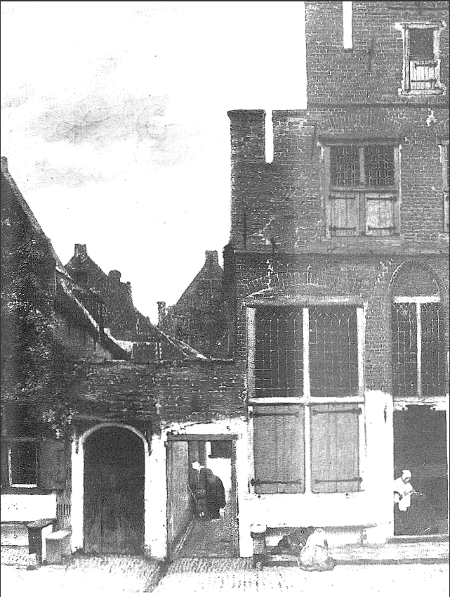
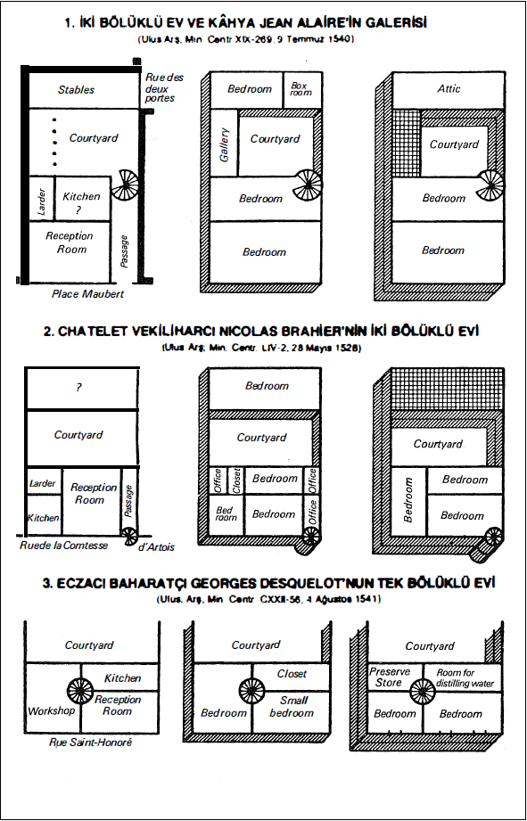
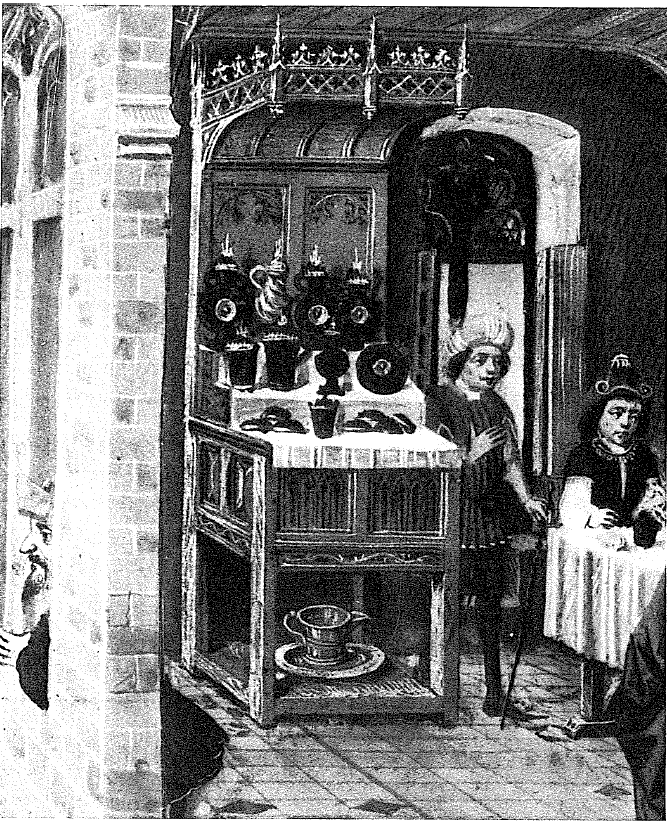

Bir önceki bölümün paragraflarında -et tüketiminden, tütün kullanımına kadar- gereğinden çok olanla, olağan arasındaki bölüşümü ortaya koymayı denedik. Yolculuğu tamamlamak üzere geriye, konut ve elbiseye bakmak kalmaktadır; bu, fakirler ile zenginleri yeniden paralel kılmanın fırsatıdır. Lüks, bu tercihli alanlardan daha iyi, nerede kendine yer bulabilir: ev, döşeme, elbise? Lüks ne kadar da can sıkıcı olmaktadır! Her şey hakkı olarak ona geliyora benzemektedir. Bu aynı zamanda, uygarlıkları kendi aralarında zıtlaştırmanın da fırsatıdır: hiçbiri aynı çözümleri benimsememiştir.
Evlere ilişkin olarak, XV. yüzyılla XVIII. yüzyıl arasında tartışılmaz, ama şaşılacak yanı olmayan birkaç çizgiyi ancak açığa çıkartabiliyoruz. Onların hepsini görmek, farketmek olanaksızdır.
Ne mutlu ki, olayların çoğu itibariyle sürekliliklerin, yavaş gelişmelerin karşısındayız. Korunmuş veya restore edilmiş çok sayıda ev bizi, XVIII. yüzyıla olduğu kadar, XVI. veya XV. yüzyıla, hatta daha geriye götürmektedirler. Örneğin Prag'daki Hradschin, Altın Sokağında, veya Santander yakınındaki harika Santillana köyünde böyledir. Bir gözlemci, 1842 tarihindeki Beauvais için, hiçbir kentin bu kadar sayıda eski evi muhafaza etmediğini bildirmekte ve bize “XVI. ve XVII. yüzyıllara kadar geri giden kırk kadar ahşap evi" tasvir etmektedir.
Üstelik, her ev geleneksel modellere göre inşa veya yeniden inşa edilmektedir. Bir öncekinin gücü, burada her yerdekinden daha fazla hissedilmektedir. Valladolid'de 1564'ün devasa yangınından sonra, zengin evleri yeniden inşa edilirken, şantiyeler aslında bilinçsiz bir şekilde olmak üzere, eski müslüman loncalarını temsil eden duvarcılara çağrıda bulunmuşlardır. Bunun sonucunda, bu yeni ve çok güzel evlerin, hakiki bir eski tarz örneği olmaları durumu ortaya çıkmıştır. Fakat adetler ve gelenekler heryerde işe karışmaktadırlar: bunlar, kimsenin kendini kurtaramadığı eski miraslardır. Örneğin İslam alemi evlerinin kendi üstlerine kapanma biçimi böyledir. Bir seyyah, 1694 yılının İran'ı için, bütün hali vakti yerinde evlerin “aynı mimaride olduğunu, binanın ortasında düzenli olarak, kenarı yaklaşık 30 ayak olan ve merkezini, halılarla çevrelenmiş küçük bir göl biçimindeki bir çukurluğun oluşturduğu, kare biçimli bir salon olduğu”nu söylerken haklıdır. Tüm dünyanın kır insanları için, bu süreklilik daha da doğrudur. 1937'de Rio de Janeiro'nun kuzeyindeki Vitoria'da, çok fakir bir köylü evinin, caboclo'nun ince ahşap iskeletinden itibaren yapımını görmek, şimdiki zamandan yüzyıllarca öncesine kadar geçerli olan, yaşını belirleyemediğimiz bir belgeye sahip olmak demektir. Göçebelerin basit çadırları için de tamamen aynı şey geçerlidir. Bunlar çoğu zaman, eskininkiyle aynı ilkel tezgâhlarda dokunmuş olarak, yüzyılları değişmeksizin katetmektedirler.
Kısacası, bir “ev” nerede olursa olsun, sürmekte ve muhafaza etmekte, devam ettirmekte, tekrarlamakta inad eden uygarlıkların, kültürlerin yavaşlıkları hakkında tanıklık etmektedir.
İnşaat malzemelerinin az değişmelerinden ötürü, her bölgede bazı zorlamaları dayatmalarına bağlı olarak, tekrar daha da doğal olmaktadır. Tabii ki bu, uygarlıkların mutlak olarak kesme taşın, tuğlanın, tahtanın, toprağın hükmü altında yaşadıkları anlamına gelmektedir. Fakat bunlar çoğu zaman uzun süreçli zorlamalardır. Bir seyyah “(İran'da) taş olmadığından (ekleyelim; tahta olmadığından) duvarları ve evleri topraktan yapmak zorunda kalmışlardır” diye kaydetmektedir. Fiili durumda, ateş tuğlaları veya çoğu zaman güneşle kurutulmuş tuğladan yapılma evler ortaya çıkmaktadır. “Zengin kişiler bu dış duvarları kireç, Moskof yeşili ve sakız karışımıyla güzelleştirmektedirler, bu onları pırıl pırıl göstermektedir”. Bunlar gene de alçıdan duvarlardır ve coğrafya bunu açıklamakta, ama her şeyi açıklamamaktadır. insanların da söyleyecek sözleri vardır.
Böylece, bir lüks olarak ortaya çıkan taşın bedelini ödemek gerekmektedir, yoksa uyuşmalar, kaytarmalar kendilerini dayatmaktadırlar: eskiden Romalı, Bizanslı duvarcıların, şimdi de Türk veya Çinli duvarcıların düzenli olarak yaptıkları gibi, tuğlayı taşa katmak; tahta ve taşı birlikte kullanmak, veya taşı yalnızca hükümdarların ve tanrıların evlerine ayırmak, İnkaların Cuzco'sunda taş ayırım yapmadan zafere ulaşmıştır, ama Mayalarda yalnızca rasathaneler, tapmaklar, stadyumlar bu ayrıcalığa sahip olmuşlardır. Yolcu bu anıtların yanında, gündelik hayatın dallardan ve kerpiçten yapılma kulübelerini, Yukatan'da Chichen Uza veya Palenque kalıntılarının civarında bugün bile hâlâ farkedilen halleriyle hayal etmelidir. Aynı şekilde, Hindistan'da Dekkan'daki dikdörtgen biçimli değerli taş mimarisi, kuzeyde Hind-Ganj ovasının yumuşak topraklarına kadar çıkmaktadır.

1659’a doğru Delft’e bir ev. Tuğla evler, tahta kepenkler, açılmayan camlı panolar, Amsterdam, Rijksmuseum
Batı'da ve Akdeniz'de, bir taş uygarlığının yerleşebilmesi için yüzyıllar gerekmiştir. Taş ocaklarını işletmek, işlemesi kolay ve açık havada sertleşen taşları seçmek gerekmiştir. Yüzyıllar boyunca yatırım yapmak gerekmiştir.
Paris çevresinde çok sayıda kumtaşı, kum, kaba kalker, alçıtaşı ocağı bulunmaktadır. Kent kendi yerleşim yerini önceden madene çevirmiştir. Paris “Chaillot, Passy ve eski Orleans yolu tarafında muazzam kazı alanlarının üstünde”, “Saint- Jacques mahallesinin, Harpe sokağının ve hatta Tournon sokağının tümünün" altında inşa edilmiştir. Kaba kalker Birinci Dünya Savaşına kadar geniş ölçüde çıkartılmış, büyük mahallelerin istasyonlarına kadar getirilmiş ve sonra büyük yük arabalarıyla Paris içine taşınmıştır. Ancak bu imgeler yanıltmamalıdır: Paris her zaman bir taş kenti olmamıştır. Bunun gerçekleşebilmesi için, XV. yüzyıldan itibaren, Normandiya'dan gelen doğramacıların, Limousinli dam ustalarının, kertikçilerin, duvarcıların (bunlar büyük işlere alışkındırlar), ince işlerde uzmanlaşmış döşemecilerin meydana getirdiği kalabalığın, çok sayıda alçı ustasının devasa çaptaki çalışmaları gerekecektir. Sebastien Mercier'nin zamanında, alçıcıların her akşam kaldıkları yerlere dönerken, yolda bıraktıktan izlerden, onları tanımak mümkündür. Ve o çağda çok sayıda ev, yalnızca alt kısmı taş, katları tahta olmak üzere inşa edilmiş değil miydi? 27 Nisan 1718'deki Petit Pont yangını sırasında, ahşap evler “(içine) koskoca kalasların düştüğünün görüldüğü büyük (bir) kireç kuyusu” gibi, hiçbir azalma olmadan tutuşmuşlardır. Nadir kâgir evler, ateşin aşamadığı koruyucu dalgakıranlar olmuşlardır. Bir tanık “çok iyi inşa edilmiş olan Le Petit Châtelet, Huchette caddesini ve Galande caddesi tarafını kurtardı” diye kaydetmektedirler.
Böylece Paris, birçok diğerine, 1547'deki büyük yangında aniden tutuşan Troyes'ya, XVII. yüzyılda bile saman sapıyla kaplı çatılı ahşap evleri olan Dijon'a benzeyen bir ahşap kenti olmuştur; daha sonra taş kendini kabul ettirecek ve onunla birlikte, özellikle yaldızlıları olmak üzere, kiremitler ortaya çıkacaktır. Lorraine'de kent ve köy evleri tahta kiremitlerle kaplıdır, inatçı ama yanlış bir gelenek, bu kentte Roma mimarisinin sürdüğünü görmek istemesine rağmen, yuvarlak kiremitler geç tarihlerde benimsenmişlerdir. Main yakınlarındaki Wetterau'nun bazı köylerinde, XVII. yüzyılda evlerin samanla veya hatta düzensiz tahta kiremitlerle kaplanmasını yasaklamak gerekecektir. Kuşkusuz yangın tehlikelerinden ötürü. Bu yangınlar Savua'da o kadar sık meydana gelmektedirler ki, Sardinya kralının yönetim örgütü 1772'de “kentler, kasabalar ve büyük köyler”deki felâketzedelere ancak eğer yeni çatılar tuğla veya arduvaz taşından olursa yardım etmeyi önermiştir. Kısacası taşın ve kiremitin, şurada veya burada tahta çıkması zorlama sonucu, hatta primlerin teşvikiyle olmuştur. Kiremit örtülmüş çatı XVIII. yüzyılda Saöne ovasında “refah simgesi” olarak kalmakta ve 1815'te bile, Fransa'nın kırsal konutlarında istisna olmaktadır. Nuremberg müzesinde bulunan ve bir köyün konutlarını özenle gösteren bir resim, kiremitli damları kırmızıya, saman kaplı olanlarını griye boyamaktadır; bunun fakir ve zengin köylüleri önceden ayırmanın bir biçimi olduğuna iddiaya girelim.
Tuğla da İngiltere'den Polonya'ya olan alanda, hemen zafer kazanamamıştır; 1600'de Nuremberg yakınında büyük bir köy: kırk kadarının çatısı samandan (daha koyu olanlar), on kadarı da kiremit kaplı çatıya sahip olan (daha açık olanlar) elli kader ev; iki değirmen (biri iki dolaplı), çayırlar, sürülü tarlalar. Köyü çevreleyen kazıklı bir duvar. (Hauptamt für Hochbauwesen, Nürnberg) buralarda olağan olarak, ahşap bir mimarinin ikâmesi olmuştur. Almanya'da ise, tuğlanın başarısı, yavaş adımlarla olmakla birlikte, erkenden, XII. yüzyıldan itibaren başlamıştır.
Paris'in bir taş kenti haline geldiği dönemde, Londra Elizabeth çağından itibaren tuğlayı benimsemiştir. Dönüşüm, kentin dörtte üçünü yutan 1666 yangınından sonra tamamlanacak, 12.000'den fazla ev bundan sonra, kuşkusuz hiçbir şeyin hizaya sokamayacağı bir şekilde, kitlesel ve düzensiz bir yeniden inşa faaliyetiyle ortaya çıkacaktır. Aynı şekilde, XVIII. yüzyılda Amsterdam'da tüm yeni inşaatlar tuğladan yapılmaktadır; bu, koruyucu bir katran tabakasının sürülmesiyle esmerleşmiş ve beyaz taştan kiriş ve alınlıklarla zıtlaşan bir tuğladır. Aynı şekilde, 1662'de Moskova'da sıradan evler hâlâ ahşaptır, ama birkaç yıldan beri “ya boş gururdan, ya da sık yangınlara karşı daha büyük güvenlik ihtiyacından" tuğladan evler “oldukça çok sayıda" inşa edilmektedir.
Böylece malzemeler zaman içinde birbirlerini izlemekte ve bu izleme, gelişme ve zenginleşme hattını belirlemektedir. Fakat hemen heryerde, malzemeler birarada da bulunmaktadır. Örneğin Çin'de, bol bol kullanılan tahtanın ve kerpicin yanısıra, tuğla kentlerdeki ve bazı ayrıcalıklı kır kesimlerindeki ev mimarisinde azımsanamayacak bir yere sahiptir. Kent surları olağan olarak tuğladan, köprüler çoğu zaman taştan ve bazı yollar kaldırım taşıyla kaplanmış olarak yapılmaktadır. Çin'de kural olduğu üzere, Kanton'daki, basık ve tek katlı olan evler, çok hafif bir şekilde, adeta temelsiz bir şekilde inşa edilmişlerdir ve ham veya pişmiş, sonra da saman ve kireç karışımıyla kaplanmış tuğladan yapılmışlardır. Ne taş, ne de mermer: bunlar hükümdar lüksünün içine girmektedirler. Pekin saraylarının içine hapsoldukları muazzam duvarların içinde, beyaz mermerden taraçalar, merdivenler ve trabzanlar birbirlerini sonsuza kadar izlemektedirler ve “bütün binalar” insan boyunda “kırmızımtrak bir mermerden temeller üzerine inşa edilmişlerdir”. Uçları yukarı kıvrık, ünlü cilalı tuğlalarla kaplanmış çatılar, tahta sütunlar ve “bir kirişler, taban kirişleri ve yaldızlı yeşil bir cilayla kaplanmış tahta bacaklar ormanının” üzerine yaslanmaktadır. Çin mimarisindeki bu mermer ile ahşap karışımı ancak, kendi bir kent ve istisnai bir kent olan imparatorluk sarayına ilişkin olarak işaret edilmekedir. “Dünyanın en güzel ovalarından birinde yer alan” ve köprülerle kaplı kanallarıyla ve “beyaz taşla kaplı" sokaklarıyla “Venediğe çok benzeyen” Çekian bölgesindeki Çau-King-Fu'yu tasvir ederken, bir seyyah şunu eklemektedir: “evlerin bir kısmı olağanüstü bir beyazlıktaki kesme taştan yapılmıştır, bunun Çin'in diğer kentlerinde hemen hiçbir örneği yoktur”.
Tahta, kil veya kerpiçle karışık olarak veya olmayarak, coğrafyanın veya geleneğin kullanımını teşvik ettiği heryerde egemendir: Pikardiya'da, Champagne'da, İskandinav veya Moskof ülkesinde, Ren bölgesinde ve belli bir gecikmenin onun muhafaza edilmesine yardım ettiği heryerde. Kolonya okuluna mensup ressamlar, XV. yüzyılda düzenli olarak, tahta kirişler arasında toprak, saman karışımı konularak yapılan evleri işaret etmektedirler. Moskova'da, prefabrike tahta evler birkaç saat içinde kurulabilmekte veya sahibinin istediği bir yere taşınabilmekteydi. Heryerde hazır ve nazır, mekânın ve manzaranın efendisi orman, hizmetlerini dayatmakta ve sunmaktadır. Neden başka bir yerde aramalı? Ormanın kendini, Moskof ülkesinde olduğu gibi, boğucu geniş mekânlar halinde gösterdiği Polonya'da, köylü evini inşa etmek için “çamları kesmekte, gövdelerini götürmekte, bunları uzunlamasına ikiye bölmekte, bir karenin dört köşesine konulmuş dört büyük taşın üzerine bunları yerleştirmekte, böylece temeli oluşturmakta, düz tarafı üste getirmektedir; bunların uçlarında V biçiminde yarıklar açarak, aralarında fazla açık kalmadan, onların uçlarda birleşmelerini sağlamaktadır; böylece altı ayak yüksekliğinde, oniki ayak genişliğinde bir kafes elde etmekte, buna iki açıklık bırakmaktadır, bu açıklıklardan biri, yaklaşık bir ayak yüksekliğinde olup, ışık içindir; diğeri insanlar içindir ve dört veya beş ayaktır; iki veya üç cam veya yağlı kâğıt karosu pencereyi kapatmaktadır. Temel açılarından birinde, kitle bulanmış çalı çırpıdan oluşan bir piramidin kenarlarını meydana getiren dört tane çıta yükselmektedir, burası evin içinde yapılan ocağın dumanının dışarıya çıkmasına yarayan borudur". Bütün bu işler “tek bir alet”in, baltanın yardımıyla yapılmaktadır. Bu model yalnızca Doğu Avrupa'ya ait değildir; Fransız veya İtalyan Alplerinde ve koşulların benzer olduğu Kuzey Amerika'da “pionneer" evinde de ona rastlanmaktadır.
Tahtanın yeterli olmadığı -ve aynı anda lüks hale geldiği- heryerde toprak, kil, saman tek başvurulacak malzemeler olarak kalmaktadırlar. 1639'da Portekiz Goa'sında evlerin “hepsi de samandandır ve küçüktür, basık bir kapıdan başka açıklıkları yoktur. Mobilya, üzerinde uyudukları veya yemek yedikleri birkaç hasırdan ibarettir. Evlerinin dış yüzeyine inek dışkısı sürmektedirler, çünkü bunun bitleri uzak tutacağına inanmaktadırlar”. Bu imgeler Hindistan'ın birçok kazasında, bugün bile geçerlidirler: ev dramatik bir şekilde dar kalmakta, ocağı ve penceresi bulunmamakta, daracık köy sokağı, hiçbir ahırın kabul etmediği hayvanlarla tıkanmaktadır.
Macartney veya Guignes'in tasvir ettikleri biçimiyle, Kuzey Çin'in kırsal evleri “(çoğunlukları itibariyle) yalnızca, güneşte iyi kurutulamamış ve kalıba dökülmüş topraktan yapılmıştır... Bazen duvarları yalnızca kille kaba bir şekilde sıvanmış, sorgun ağacından olmaktadır. Duvarlar genel olarak samanla, bazen otla kaplanmıştır. Ev bölümleri kafeslerle ayrılmıştır ve üzerlerinde tanrı figürlerinin görüldüğü büyük kâğıtlar veya ahlâki sözlerin yazılı olduğu sütunlarla döşenmişlerdir. Her evin etrafında, ince bir kafesle veya kow lean (sorgho) saplarıyla çevrelenmiş boş bir alan bulunmaktadır”. Bugünkü ev modeli, bu eski tasvirleri hatırlatmaktadır. Bu ev basitliği içinde, dar bir dikdörtgen, ve en iyi durumda da bir duvarla kapatılmış bir avlunun etrafında yer alan iki veya üç dikdörtgendir. Ve kapıları ile, eğer varsa pencereleri ışığı avludan almaktadırlar. Malzeme kabacası, güneyde tuğla ve kiremit (zenginlik veya geleneğin işareti), kuzeyde kerpiç ve samandır (sorgho veya buğdaydan).
Ancak ev ister tuğladan, ister topraktan olsun, hemen her zaman tahta bir temel üzerine dayanmaktadır. Çin'de bu inşaat (günümüze kadar) “bir toprak ve tahta işi” olarak adlandırılmıyor mu? Oysa, özellikle çıplak olan Kuzey Çin'de olmak üzere tahta kıttır ve inşaatlar mütevazi olsalar bile, tahta sağlamak insan ve para cinsinden “çılgın harcamalar”a yol açmaktadır. XVI. yüzyılda yaşamış bir memur, Se-Çuan'a ait şu halk deyişini hatırlatmaktadır: “ormana odun aramak için giren bin kişiden beş yüzü oradan çıkabilmektedir”. Aynı tanık bize, Hupe ve Se-Çuan'da imparatorluk inşaatları için her odun talebinde, köylülerin “umutsuzluktan, boğuluncaya kadar ağladıkları” m bildirmektedir.
Kabaca, Çin -ve ona komşu olan ve bir bakıma kültürel ışıma alanı içinde kalan bölgeler- her şey göreceli olarak, “dövülmüş” toprak üzerine ev inşa etmektedirler. Bunun tersine, Güneydoğu Asya (Laos, Kamboç veya Siyam'da; Vietnam'ın Çinli- leşmiş bölgeleri hariç) çoğu zaman kazıklar üzerinde kurulan ev ve ambar uygulamasını korumuştur, demek ki ahşap veya bambudan hafif bir inşaat söz konusu olup, lata ve kerpiç kullanılmakta ve dam samandan olmaktadır. Çin donanımının bu nisbi sağlamlığı, acaba onun kırsal ekonomisinin sağlamlığının bir kanıtı mıdır?
İslam alemi de dövülmüş toprak üzerine inşa etmektedir. Ve bir esir düşen, bir kurtulan şövalye Chardin, bu durumu, aşk ve heyecanın da yardımıyla benzersiz bir gözlemcisi haline geldiği İran için, özenle göstermektedir. İran'da taşın eksik olmamasına rağmen, tuğla kraldır ve evlerin üstünde yer alan kubbeler de dahil, her şeye yetmektedir. Yalnızca büyük binalar, bazen sütunlar ve ahşap kirişler tarafından taşman tavanlara sahip olmaktadırlar. Fakat ister pişirilmiş, kırmızı ve sert olsunlar (bu durumda yüz tanesi bir ekü etmektedir) veya isterse sadece güneşte kurutulmuş olsunlar (bu durumda fiyat yalnızca iki veya üç sol'dür), bu tuğlalar narin bir malzeme oluşturmaktadırlar. “Bizimkilerin güzel görünümünden iyice uzak” olan evler de çabucak bozulmakta, hatta saraylar bile iyi bakılmazlarsa, çabucak bozulmaktadırlar. Ve zenginler veya fakirler, bir evi miras alırlarsa, kendilerininkini yapmak üzere onu yıkmayı tercih etmektedirler. Böylece dünya ölçeğinde, dünyanın tüm mimarilerini birbirlerine nazaran tasnif eden bir malzeme hiyerarşisi olduğu görülmektedir.
Konutların en narini, hâlâ göçebe çadırıdır. Bunun malzemesi değişmektedir (keçe, keçi veya deve tüyünden dokuma), biçimler ve oranlar da. Fakat narin çadır yüzyılları katetmektedir. Zorunluk mu, yoksa en kötü olasılık mı? Göçebenin yerleşmesi ve konutunu değiştirmesi için bir konjonktür, bir fırsat yeterli olmaktadır; örneğin Roma imparatorluğunun sonlarında, kuşkusuz belli bir ölçüde olduğu gibi; Türk fetihleri ve onları izleyen, Balkanlardaki zorunlu iskân hareketlerinde daha kesinlikle olduğu gibi; dünün sömürge Cezayir'inde ve bugünün tüm İslam ülkelerinde olduğu gibi.
Dünya'da, iki büyük ev kategorisi önceden bilinmektedir: kırsal ve kentsel olanlar. Tabii ki kırsal olanları çoğunluktadır, bunlar ev olmaktan çok barınak olup, insanların ve evcil hayvanların ilk ihtiyaçlarının karşılanmasına yöneliktirler. Bir Batılı için, İslam alemi veya Asya'nın kırsal konutlarını eski gerçeklikleri içinde canlandırmak çok zordur. Başka alanlarda olduğu gibi bu alanda da, tarihsel bilginin ışığında ayrıcalıklı kıta Avrupa'dır. Bu ayrıcalık da çok ölçülüdür.
Avrupa köylü evi, eğer öyle söylenebilirse, edebi metinlerde gözükmemektedir. Noel du Fail'in klasik tasviri, bir Bröton evinin XVI. yüzyılın ortasına doğru hızlı bir tasvirinden başka bir şey değildir. Aynı şekilde, Saint-Petersburg yakınındaki bir Fin çiftliğinin tasviri de (1709) çok nadir bir kesinlikte olmakla birlikte, çok belirgin değildir: işte tahta kulübeler grubu, çoğu harap olmuş durumda, konut ise duman içinde tek bir odadan ve iki küçük ahırdan meydana gelmekte, bir banyo (sauna), buğday veya çavdar kurutmak için bir fırın. Mobilya? Bir masa, bir sıra, bir kazan, bir küçük kazan, bir bakraç, bir kova, fıçılar, gerdeller, tahta veya toprak tabaklar, bir balta, bir bel, lahana kesmek için bir bıçak.
Bir köyün bütünsel fizyonomisi veya, insanlar ve hayvanların birlikte yaşadıkları geniş evlerin içleri hakkında, olağan olarak desenlerden veya tablolardan biraz daha fazla şey öğreniyoruz. Köy inşaatlarının örfi düzenlemelerine karşı dikkatli olmamız halinde, daha fazla şey öğreniyoruz.
Gerçekten de, bir köyde, bir ev ancak cemaatin, veya taş ile kilin çekildiği ocaklara ve “ev yapmalık” tahtanın geldiği ormana girişi denetleyen senyörlük otoritesinin izniyle inşa veya tamir edilebilmektedir. Alsace'da XV. yüzyılda bir ev için beş büyük ağaç kesmek gerekiyordu, bir ambar için de o kadar. Bu düzenlemeler bize çatıdaki tahtaların, kamışların veya samanın nasıl döşendiği hakkında; dağda rüzgâr götürmesin diye, tahta kiremitlere eklenen taşlar hakkında; yağmurlara uzun süre maruz kalmış olan saman damlarda nisbeten zayıf olan yangın tehlikesi hakkında; eskidiğinde değiştirilen saman damın aslında ne kadar harika bir gübre olduğu hakkında; bu samanın kıtlık durumunda (örneğin XVIII. yüzyılda Savua'da olduğu gibi) hayvan gıdası olabileceği hakkında; tahta ile kilin karıştırılması veya ana odanın döşemelerinin yerleştirilmesi hakkında; hanı bir ilân tahtasıyla belirtme hakkında (bir fıçı çemberi veya Almanya'da olduğu gibi, bir taç ile) da bilgi vermektedir. Köy meydanı, çoğu zaman evlerin tamamını çevreleyen sur, çoğu kere kilisenin kendi olan kale, su sağlanması (akarsu, çeşme, kuyu), köylü evinin insan konutları ve hayvan barınakları ile ambarlar arasında düzenlenmesi, bunlar ve bunlar gibi birçok ayrıntı bilinmektedir ve zaten bunlar XIX. yüzyıla, hatta ötelerine kadar devam etmişlerdir. Burgonya'da köy görünümlü küçük bir kent olan Varzy'de (Nievre), zengin evleri köylü bir görüntü arzetmekte ve onları XVII. yüzyılda tasvir eden dökümler, oturulabilecek ve aynı zamanda mutfak, yatak ve oturma odası olan yalnızca tek bir odadan başkasını zikretmeriıektedirler.
Sovyetler Birliği, Polonya, Macaristan, Almanya, Danimarka, Hollanda, İngiltere'de yirmi yıldan beri ve Fransa’da yakınlarda başlatılan, terkedilmiş köylerdeki kazılar, şimdiye kadar gülünç hale gelmiş bir bilgi boşluğunu yavaş yavaş doldurmaktadırlar. Macar puzta toprağında veya başka yerlerde bulunan eski köyler, sürekli olmaya yatkın biçimler ve ayrıntılar (örneğin tuğla ocakları) ortaya koymaktadırlar. İlk Fransız kazıları (1964 ve 1965) terkedilmiş üç köyde yapılmıştır: Montaigut (Aveyron), Saint-Jean-le-Froid (Tarn), Dracy (Cote d'Or). Bunlardan birincisi oldukça geniş, üçüncüsü çeşitli eşyalar bakımından zengin, İkincisi ise, surları, çukuru, giriş yolu, taş kaplı ve su boşaltma kanalları olan sokaktan ve ikâmet edilen mahallelerinden biri, hâlâ görülebilen sonuncu kapelladan daha büyük olan, birbirlerine bitişik iki, daha doğrusu üç kilisesi ve mezarlığıyla onu yeniden oluşturmaya izin verecek ölçüde topraktan çıkartılmıştır.
Bu kazıların dersi, köylerin ve mezraların nisbi hareketliliğidir; bunlar kendilerini yaratmakta, büyümekte, daralmakta ve bazen de taşınmaktadırlar. Bazen hiçbir çağrı olmadan “terkler” meydana gelmektedir, Alman tarihçileri ve coğrafyacıları tarafından işaret edilen şu wustungen. Çoğu zaman, belli bir alanın içinde bir ağırlık merkezi kayması meydana gelmiştir; ve mobilyalar, insanlar, hayvanlar, taşlar, her ev birkaç kilometre öteye taşınmıştır. Bu değişmeler esnasında köyün biçimi bile değişebilir. Sıkışık Lorraine köyünün başlangıcı XVII. yüzyılda ortaya çıkmışa benzemektedir. Vendee Gâtine'indeki koruluk da aynı zamanlarda, birbirlerinden uzakta soyutlanmış çiftliklerin oluşmasıyla doğmuştur, bunlar manzarayı yeniden biçimlendirmişlerdir.
Fakat çok sayıda köy veya ev, kuşkusuz değişmiş olarak, bize kadar ulaşmışlardır. Onlara bakmak yeterlidir. Müze kentlerin yanısıra, onlardan itibaren geriye giderek, uzak bir geçmişe ulaşmanın mümkün olduğu müze köyler de vardır. Ama bu arada, bu yolu katederken asıl büyük sorun, aşamaları kesinlikle ölçebilmek olarak ortaya çıkmaktadır. Öte yandan, geniş çaplı soruşturmalar -İtalya'nın tümüne ilişkin sonuçlar yayınlanmıştır, Fransa'ya ilişkin olanlar (toplam olarak, yayınlanmamış 1759 monografi) yayınlanacaktır- mümkün bir yeniden inşanın hatlarını çizmektedirler. Hayatın akışını fazla hızlandırmadığı yerlerde, örneğin Sardinya'da, köylü evleri farklı uyumlar içinde, ama görevlerine ve sakinlerinin rahatlığına, adanın farklı bölgelerine göre uyum sağlamış bir şekilde, çoğu zaman bozulmadan kalmaktadırlar.
Zaten, bilimsel bir araştırma olmaksızın, hangi turist, hangi yolcu onları kendiliğinden bulamaz ki? Örneğin Innsbruck müzesinde korunan dağ evleri içleri veya tatilci zevkinin bugüne kadar tahrib etmediği, hâlâ yerli yerinde olan, jambon ve sosis kokularının yayıldığı borne adlı tahta bacasıyla Savua'daki evler gibilerini? Aynı şekilde, Lombardiya'da da XVII. yüzyılın geniş köylü evleri, Katalonya'da XV. yüzyılın kubbeli, çemberli, güzel taşlı muhteşem masia'sı da yerli yerinde bulunacaktır. Bu iki örnekte de, bulunanlar tabii ki kesinlikle hali vakti yerinde köylülere ait evlerdir. Kesinlikle nadir olanlar.
Avrupa'da olmak üzere, kentlerin zenginlerini ziyarete gitmek daha kolaydır, çünkü Avrupa dışında, hükümdar sarayları hariç, malzemelerin ihanetine uğrayan eski evlerden hiçbir şey korunamamıştır. Ve iyi tanıklıklardan yoksunuz. Öyleyse dar kıtada kalalım.
Paris'te, Sorbonne'un karşısındaki Cluny müzesi (Cluny başrahiplerinin konağı) 1498'de, XII. Louis'nin uzun zamandan beri bakanı olan kardinalin kardeşi Jacques d'Amboise tarafından bitirilmiştir (13 yıldan daha az bir sürede). Bu konak 1515'te, bir an için, XII. Louis'nin çok genç dulu Marie d'Angleterre'i barındırmıştır. Marais mahallesinde, Guiselerin 1553-1697 arasındaki ikâmetgâhları, bizim bugünkü Ulusal Arşivlerimizdir. Mazarin ise, deyim yerindeyse, 1643-1649 arasında Ulusal Kütüphanede oturmuştur. Samuel Bernard'm (XVI. Louis zamanında Avrupa'nın en zengin tüccarı) oğlu Coubert kontu Jacques-Samuel'in evi Bac caddesinde (no. 46), Saint-Germain bulvarından birkaç metre ötede olup, 1741-1744'de inşa edilmiştir. Dokuz yıl sonra, 1753'te bu evin sahibi iflas etmiş ve Voltaire bile bundan zarar görmüştür. Ama eğer Paris yerine, hayranlık verici bir şekilde korunmuş bir kent olan Krakow'u gündeme getirseydik, hem prens Czartoryski'ye, hem de evi Pazar (Rynek) meydanında yer alan -ve hâlâ burada yemek yenilebilen-, XIV. yüzyılın çok zengin tüccarı Wierzynek'e konuk olabilirdik. Prag'da, içinde kaybolma tehlikesiyle birlikte, Wallenstein'in Moldau kıyısındaki muazzam ve aşırı gururlu evini ziyaret edebilirdik. Toledo'de Lerma dükleri müzesi, kuşkusuz Greco'nun evinden daha hakikidir.
Daha mütevazi bir katta, işte XVI. yüzyıl Paris apartman daireleri ki, Noterlik Arşivlerinin titizliği sayesinde, sanki muhtemel bir alıcıya sunuluyormuşcasına, bunların planlarını yeniden çıkartabilecek durumdayız. Bu planlar kendiliklerinden konuşmaktadırlar, ama bunlar harcıalem konutlar değillerdir. Çünkü inşaatlar arttığında, XVII. ve XVIII. yüzyıl Parislilerinin gözünde ölçüsüz hale geldiklerinde bile, fakirler bugünkünden çok daha kötü bir şekilde, sefilâne bir tarzda barınmaya devam etmişlerdir ki, bu az bir şey değildir.
Genel olarak-şarap tüccarları veya perukacılar tarafından işletilen, Paris'teki mobilyalı odalar pis, bit ve pire dolu olup; fahişelere, suçlulara, yabancılara, geliri olmayan ve taşradan yeni gelmiş gençlere sığınak sunmaktadırlar. Polis burada ölçüsüzce arama yapmaktadır. Birazıcık daha iyi durumda olanlar, mimarlar tarafından “mahzen gibi” yapılmış bodrum katlarında veya çatı katlarında oturmaktadırlar. Olağan olarak, kiracı ne kadar yukarı çıkarsa, toplumsal durumu o kadar bozulmaktadır. Sefalet altıncı, yedinci katlan, çatı katını, bodrumları kendine mekân seçmiştir. Bazıları bu sefaletten kurtulmaktadırlar. Greuze, Fragonard, Vemet buralarda yaşamışlardır ve bundan “hiç kızarmamaktadırlar”, ama diğerleri? Hepsinin en kötüsü olarak, 1782'de “Saint-Marcel mahallesinde” “bir aile (çoğunlukla) tek bir oda işgâl etmektedir... burada dökülen yataklar perde olmakta, burada mutfak araçları yatak odası lâzımlıklarıyla birlikte yerlerde yuvarlanmaktadırlar”. Her kira bitiminde aceleci, utangaç taşınmalar çoğalmaktadır, Noel'e rastgelen ve kış soğuğunda olanı, hepsinin en korkuncudur. “Bir hamal, sırtlığının üstüne, fakir birinin hakikaten tüm eşyalarını koymaktadır: şilte, ot minderler, iskemleler, masa, dolap, mutfak araçları; sonra kiracının malik olduğu her şeyi bir beşinci kattan bir akıncıya çıkartmaktadır... Bu o kadar doğrudur ki, Saint-Honore mahallesinin tek bir evinde (1782'ye doğru), Saint- Marcel'in tümündekinden fazla para vardır”. Ve mahalle devrevi olarak, “Gobelins nehri” Bievre'in su baskınlarına maruz kalmaktadır. Örneğin Beauvais'ninki gibi, kötü tahta direklere bindirilerek yapılmış, “altta iki, üstte iki oda ve oda başına bir ailenin oturduğu”, küçük kentlerin sıkışık evlerine ne demeli? Veya “cadde üzerinde, yalnızca dar bir duvarı olan, hepsi enlemesine giden”, “deli takkesi biçiminde” ve tahta direkler ile kerpiçten yapılma sivri çıkıntıları olan Dijon evleri için ne demeli?

XVI. YÜZYILDA PARİS’TE DAİRELER
Nereye gidilirse, aynı durum söz konusudur. Örneğin Hollanda kentlerinde ve bizzat Amsterdam'da bile, fakirler alçak evlerde veya bodrum katlarında barınmaktadırlar. Bu fakir evi XVII. yüzyılın genel refahından önce kuraldır- iki odadır: “öndeki oda, arkadaki oda”. Bunlar genişletildiklerinde, artık “burjuva” evi olan konutların cepheleri dar olmayı sürdürmekte, ama genel olarak tek bir aileyi barındırmaktadır. Bu evler olabildiğince, enine ve boyuna yayılmakta, bodrum ve katlar yönünde, “asma odalar” olarak yayılmaktadır, yani hep eklemeler halinde; odalar birbirlerine basamaklar ve ip merdivenler gibi dar merdivenlerle bağlanmaktadır. Rembrandt'ın gösteriş odasının (misafir odası) arkasında, işte yatak odası ve içinde acılı Saskia'nın dinlendiği, yüklük biçimindeki yatak.
XVIII. yüzyıldaki belirleyici lüks, her şeyden önce zenginlerin konutlarındaki bir kopuş olacaktır. Fakirler bunun sonuçlarına maruz kalacaklardır, ama bu başka bir sorundur. Bir yanda konut; yemek yenilen, uyunan yer, çocukların yetiştirildiği, kadının artık ev hanımından başka bir rol oynamadığı yer ve işgücü bolluğundan ötürü çalışan veya çalışıyormuş gibi yapan, geveze ve vefasız, aynı zamanda üzerlerine dehşet saçılan -tek bir kelime, bir şüphe, bir hırsızlık hapishane, hatta darağacı demektir- bir hizmetkâr kitlesinin yığıldığı yer... Öte yandan, çalışılan ev, satış yapılan dükkân, hatta en güzel günlerin geçirildiği büro. O zamana kadar bir bölünmezlik rejimi olmuştur: usta dükkânını veya atelyesini evinde bulundurmaktadır; işçilerini ve çıraklarını burada barındırmaktadır. Bunun sonucunda, Paris tüccar veya zenaatkârlarının dar ve yüksek (arsaların fiyatının yüksek olmasından ötürü) evlerinin karakteristik biçimi ortaya çıkmıştır: altta dükkân, üstünde ustanın konutu, daha yukarıda işçi odaları. Aynı şekilde, 1619'da her Londralı fırıncı, kendi çatısının altında çocuklarını, hizmetkârlarını ve çıraklarını barındırmakta, grup “family"yi meydana getirmekte ve fırıncı ustası bu grubun başkanı olmaktadır. XIV. Louis'in zamanında kralın sekreterleri bile, bazen kendi evlerinde bir bakanlık bürosuna sahiptiler.
XVIII. yüzyılda her şey değişmektedir. Ve bunda büyük kentin mantıki bir zorlamasının olduğuna inanmak gerekir, çünkü bu değişmeyi Paris veya Londra'da olduğu kadar, merak uyandırıcı bir şekilde, Kanton'da da buluyoruz: XVIII. yüzyılda Avrupalılarla temasta olan Çinlilerin dükkânları bir yerde, evleri başka bir yerdedir. Aynı şekilde Pekin'de, hali vakti yerinde tüccarlar her akşam, karıları ve çocuklarının oturduğu mahalleye gitmek üzere dükkânlarından ayrılmaktadırlar.
Avrupa'ya yabancı imgelerin merakımızdan kaçması, dünyayı tam değerlendirebilmemiz açısından ne büyük bir eksikliktir? İslam, Çin ve Hind evleri için verdiğimiz imgeler ve şemalar zamandışı olma tehlikesi taşımaktadırlar. Kentler bile -okuyucu bu kitapta Pekin hakkında söyleyeceklerimize baksın- bize gerçek yüzlerini göstermemektedirler. Üstelik bizi bilgilendiren seyyahlar, Montaigne'in özenli dikkatine sahip değillerdir: muhtemel okuyucuların bekledikleri büyük seyirlere yönelmekte; Kahire evlerine değil de, Piramidlere; sokak veya dükkânlara, hatta Pekin veya Delhi ekâbiranının evlerine değil de, Yasak İmparatorluk Kenti ile sarı duvarlarına, Hind Moğol hanının sarayına gitmektedirler.
Ancak, dünyanın tümünün ölçeğinde, kent evleriyle kır evleri arasındaki ayırım çok kategoriktir. İki aile zenginlik düzeyinde buluşmaktadır, çünkü XVI. ve XVII. yüzyıllarda47 İngiltere köylerini bütünsel ve çarpıcı olarak yenileyen birkaç dönüşüm hariç, kırlardaki değişmeler, bizatihi kentlerdeki lüksün yansıması sonucu olmaktadır. Kent birikmiş paradan yana zengin hale gelir gelmez, bunu yakınındaki kırlara yeniden plase etmekte, yatırmaktadır. Zenginler, onları soylulaştıran toprak, avantajlı veya en azından emin gelirler, kırsal hükümler, senyörlük konutlarının rahatlığı tarafından cezbedilmeselerdi bile, bu işi gene de yaparlardı.
Tarlalara bu geri dönüş, Batı'nın güçlü çizgilerinden biridir. XVII. yüzyılda konjonktür dümen kırdığından, bu dönüş istila eden bir delilik haline gelmiştir. Soylu ve burjuva mülkiyeti, kentlerin etrafında zeytinyağ lekesi gibi yayılmaktadır. Ancak kenar bucakta olan ve bu yırtıcı istilalardan kurtulabilen bölgeler, köylü ve köhne olarak kalabilmişlerdir. Çünkü kentteki malik mallarını, rantlarını, haklarını gözetmekte; topraklarından buğday, şarap, kümes hayvanları getirtmekte; fırsat çıktığında mülkünde ikâmet etmekte ve toprak parçalarını biraraya getirip “çitli” alanlar oluşturarak, burada çoğu zaman kendi kullanımı için binaların bir kısmını yeniden inşa ettirmektedir.
Bu açıdan, Paris'in etrafında bulunan çok sayıdaki senyörlük çiftliği, “tarla evlerimin efendilerinin konutları açıklanabilmektedir. Aynı şekilde, Provence kırlarındaki senyör evleri de açıklanmaktadır. Veya, XVI. yüzyıldan itibaren kentin dışında, aslı kadar zengin bir Floransa yaratmış olan, Floransalıların konutları. Veya eski kentten bizatihi özünü alan, Brenta vadisindeki şu Venedik konutları. XVIII. yüzyılda kentsel saraylar, villaların lehine olmak üzere küçümsenmektedirler. İster Lizbon,, ister Raguza, Dijon, Marsilya, Bordeaux, Milano, Nuremberg, Kolonya, Hamburg, La Haye veya Londra yakınlarında olsun, bütün bu oluşumlarda çıkarın da söyleyecek sözü bulunmaktadır. XVIII. yüzyılda İngiliz kırlarının tümü pahalı konutların yapımına tanık olmaktadır. 1779 tarihli bir derleme, bu “şatolar”dan 84 tanesinin ve özellikle de Oxford dükünün Norfolk/Houghton'da sahip olduğunun reprodüksiyonlarıyla birlikte, tasvirlerini vermektedir. Oxford dükünün şatosunun yapımına 1722'de başlanmış ve 1735'de bitirilmiştir ve binanın muazzam salonları, mermerleri, galerileri bulunmaktadır. Ancak yolculuk için yolculuk yapılırsa, bugün bile hâlâ en güzellerinden biri olanı (ama daha şimdiden geç kalınmıştır) bizi XVIII. yüzyılın neo-klasik villalarını aramak üzere, Napoli civarında Torre del Greco'ya, S. Giorgio da Barra'ya, Krallık sarayının yakınındaki Portici de, Cremano'ya, Torre Annunziata da Resina'ya kadar götürecektir. Bunların hepsi de muhteşem villalar, Vezüv bayırları ile deniz arasında yer alan harika ikâmetgâhlardır.
Batı'da aşikâr olan, kırların kentler tarafından bu kolonizasyonu, diğer yerlerde de mevcuttur. Bu, İstanbullu zenginlerin Boğaz'ın iki yakasında inşa ettirdikleri yalıların veya Cezayirli reislerin Sahel tepelerinde yaptırdıkları ve “bahçeleri dünyanın en güzeli olan” konutların durumudur. Uzak Doğu'da olgu bu kadar göze görünür değilse, bu, kırların güvensiz olmasına, bundan da fazlası, belgelerimizin eksikliğine bağlıdır. Bernardino de Escalante kitabında (1577) başka bir yolcunun anlattıklarına dayanarak, zengin Çinlilerin “bahçeleri, ağaç düzenlemeleri, kuşhaneleri, gölleriyle... keyif evleri”nden söz etmektedir. 1693 Kasımında Pekin yakınlarına ulaşan Moskof elçisi “mandarinlere ve başkentte oturanlara ait olan... her evin önünde geniş bir kanal ve onu aşmak için küçük bir köprü bulunan..., çok sayıda keyif evi veya muhteşem şato”ya hayran olmuştur. Burada eski bir gelenek söz konusudur. En azından XI. yüzyıldan itibaren, Çin edebiyatı bu akar sular ortasında yer alan, nilüferlerinin “erguvan ve siklamen” renkli çiçekleriyle her zaman yapay bir gölü bulunan bu evlerin cazibe ve zevkini katlamaktadır. Burada bir kütüphane oluşturmak, burada kuğu veya “balıklarla savaşan leylekleri” görmek; veya yuvalarından “çıkan tavşanları alçakça” gözetlemek ve onları “deliklerine girerken” oklarıyla delmek dünyada bundan büyük zevkler var mıdır?
Dıştan görünen evler ilk manzarayı oluşturmaktadırlar; içten görünen ise ikinci manzaradır. Hiç kimse, İkincinin birinciden daha basit olduğunu söyleyemez. Fiili durumda, dünya ölçeğindeki tasnif, bütünsel bakış ve açıklama sorunları yeniden ortaya çıkmaktadır. Burada da tutunanı ve yavaş değişeni görmek, bu manzaranın kalın çizgilerini çizmek demektir. Oysa nerede olurlarsa olsunlar, fakir insanlar veya hareketten mahrum ve kendi üzerlerine kapanmış uygarlıklar söz konusu olduğunda, yani sonuçta fakir veya fakirleşmiş uygarlıklar söz konusu olduğunda, ev içleri hiç değişmemektedir. Yalnızca Batı, kesintisiz bir değişmenin damgasını yemiştir. Bu, efendilerin ayrıcalığıdır.
İlk kural fakirlerin yoksunluğudur, zaten bu kendiliğinden anlaşılmaktadır. En zengin ve değişmekte en hızlı uygarlık olan Avrupa için, bunun ortaya konulması, diğerleri için a fortiori yeterli olacaktır. Oysa, Batı'da kırların veya kentlerin fakirleri, hemen hemen tam bir yoksunluk içinde yaşamaktadırlar. Bunların mobilyası, en azından bir başlangıç lüksünün yayılmaya başladığı XVIII. yüzyıla kadar (o zamana kadar sıralarla yetinilirken, iskemleler, yün şilteler, kuştüyü yataklar ortaya çıkmıştır) hiçbir şeydir veya hemen hemen hiçbir şeydir; bu yüzyıldan itibaren bazı bölgelerde boyanmış veya sabırla yontulmuş, köylü gösteriş (misafir) mobilyaları yayılmaya başlamıştır. Fakat bu bir istisnadır. Gerçekleri ortaya koyan belgeler olan, tereke dökümleri bunu bir kereye karşılık, yüz kere ortaya koymaktadırlar. Burgonya'da XVIII. yüzyılda bile, sayıları çok az olan tuzu kuruda köylüler bir yana bırakıldığında, işçi ve küçük çiftçinin mobilyaları, fakirlikleri içinde benzer olarak ortaya çıkmaktadırlar: “ocak çengeli, ocaktaki tencere, tavalar, quasses' (soba), ‘meix’ ekmek teknesi... kilitli sandık, dört sütunlu tahta yatak, kuştüyü yastık, 'guidon' (örtü), uzun yastık, yatak örtüsü; kalın kumaştan dar pantalon, ceket, mest lastikler, birkaç alet (kazma, kürek)...”. Fakat XVIII. yüzyıldan önce bu dökümler birkaç eski püskü elbise, tabure, bir masa, bir sıra, bir yatağın tahtaları, saman dolu çuvallara... inmektedir. XVI.- XVIII. yüzyıllar arasındaki Burgonya'da, tutanaklarda “yatağı ve mobilyası olmayan... saman üstünde yatan insanların” atıfları kaynamaktadır, bu insanlar domuzlardan “yalnızca bir parmaklıkla” ayrılmaktadırlar. Ve kendi gözlerimize inanalım. Adrien Brower'in (1605-1638) bir tablosunda, dört köylü, fakir döşenmiş bir odada koro halinde şarkı söylemektedir: odada birkaç tabure, bir sıra, masa görevi gören bir fıçı vardır, bunun üzerinde eski bir bezin yanına bir somun ile bir testi konulmuştur. Bu bir rastlantı değildir. İkiye kesilerek arkalıklı koltuk haline getirilen eski fıçılar, XVII. yüzyıl Hollanda ressamlarının çok sevdikleri şu köy meyhanelerinde her işte kullanılmaktadırlar. Ve J. Seen'in bir tablosunda, bir fıçının üzerine konulan bir tahta, yanında ayakta duran annesinin ona verdiği yazı dersinde, sıra görevi görmektedir. Üstelik, etrafında okuma yazma bilenler olduğu için, en talihsizler zümresinden de değildir. XIII. yüzyıla ait eski bir metnin birkaç kelimesi, kendi başlarına bir tablo meydana getirmektedirler: aslında “beyaz ekmekten ve mükemmel kırmızı şarap”tan yana zengin olan Gaskonya'da, “ateşin etrafında oturan” köylüler, “masa olmaksızın yemek ve hepsi de aynı testiden içmek” adetine sahiptirler.
Bütün bunlar oldukça mantıklıdır: sefalet heryerde hazır ve nazırdır. 1669'da Fransa'da, “serseriler ve yararsız insanlar” tarafından orman kıyısında “tünekler üzerine inşa edilmiş evlerin” yıkılmasını emreden hüküm karakteristiktir. Bu kulübeler, Londra'daki 1664 vebasından kaçarak, koruların ortasına sığınan bazı İngilizler tarafından yapılan kulübeleri akla getirmektedir.59 Kentlerdeki manzara da, aynı derecede yürek parçalayıcıdır: Paris'te Saint-Marcel, hatta Saint-Antoine mahallelerinde, yalnızca birkaç marangozun rahatı yerindedir; Le Mans veya Beauvais'de, dokuma işçileri yoksunluk içinde yaşamaktadırlar. Fakat Adriyatik kıyısındaki, 1000 kadar nüfusu olan küçük Pescara kasabasında, 1564 tarihli bir soruşturma, komşu dağlardan veya Balkanlardan gelmiş olan ailelerin dörtte üçünün evsiz olduklarını, in gibi yerlerde yaşadıklarını (daha şimdiden gecekondu) ve buna rağmen, kentin küçük olmasına rağmen bir kaleye, bir garnizona, fuarlara, bir limana, tuzlalara sahip olduğunu ve İspanya'nın Atlantik ve değerli maden ihtişamına ortak olan, şu XVI. yüzyılın ikinci yarısındaki İtalya'nın içinde yer aldığını işaret etmektedir. Çok zengin Cenova'da, evsiz fakirler her kış kendilerini kadırgalara gönüllü forsa olarak satmaktadırlar. Venedik'te, sefiller aileleriyle birlikte kırık dökük kayıkların içinde olmak üzere, rıhtımların yakınında (fondamenta) veya kanal köprülerinin altında barınmaktadırlar; bunlar aileleri, evcil hayvanları ve kümesleriyle birlikte bindikleri kayıkları veya sampanlanyla, kentin nehirleri boyunca, bir aşağı, bir yukarı nihayetsiz bir şekilde gidip gelerek iş arayan Çinli zenaatkârların kardeşleridir.
İkinci kural: geleneksel uygarlıklar alışılmış dekorlarına sadık kalırlar. Eğer bazı değişmeler -porselen, resimler, bronzlar- hariç tutulacak olursa, bir Çin evinin içi XV. yüzyılda neyse, XVIII. yüzyılda da odur; geleneksel Japon evi -XVIII. yüzyıldan itibaren bu evleri süslemeye başlayan renkli estamplar hariç- XVI. yüzyıldan XVIII. yüzyıla kadar aynıdır ve bunu bugün bile görmek mümkündür. Hind'de de aynı durum söz konusudur. Ve eski bir İslam evini, en yakma ait imgeler aracılığıyla hayal etmek mümkündür.
Zaten Çin hariç, Avrupa dışındaki uygarlıklar döşeme konusunda fakirdirler. Hind'de, uygulamada iskemle ve masa yoktur. Tamilcedeki meçei kelimesi Portekizceden (mesa) türemiştir. Kara Afrika'da iskemle yoktur, Beninli sanatçılar Avrupa iskemlelerini taklid etmekle yetinmektedirler. İslam dünyasında ve onun etkisine maruz kalan ülkelerde de ne iskemle, ne de yüksek masa vardır. İspanya'da Perez de Chinchon'un Anfialcordn (1532) adlı kitabında, Moriscolara karşı sövüp saymalarında, şu garip üstünlük kanıtı yer almaktadır: “biz hıristiyanlar gereken yüksekliğe oturuyoruz, hayvanlar gibi yere değil”. Bugünkü Yugoslavya'nın müslüman kesimlerinde, örneğin Mostar'da, konukların minderler üzerinde oturarak etrafında yer aldıkları alçak masa, bundan yirmi yıl öncesine kadar kuraldı; bu kural, geleneğe bağlı aileler arasında ve çok sayıda köyde devam etmektedir. 1699'da Hollandalı tüccarlara, Moskof ülkesine çok kalın kâğıt getirmeleri tavsiye edilmekteydi, çünkü Rus'un az masası vardır ve çoğu zaman dizinin üzerinde yazdığı için, dayanıklı bir kâğıt kullanılması gerekmektedir.
Tabii ki Batı'nın diğer uygarlıklar karşısında yalnızca üstünlükleri yoktur: Doğu uygarlıkları konut ve döşeme konusunda, çoğu zaman Avrupalılarınkinden daha az maliyetli olan, dahiyane çözümler benimsemişlerdir. Onların da aktifinde üstünlükler bulunmaktadır: İslamiyet için halka açık hamamlar -ama Roma'dan miras-; Japonya için en harcı alem bina içlerinin bile zerafet ve temizliği, yerleştirme mekânlarının dahiyaneliği.
Osman ağa kendini, esaretten kurtuluşunun güç yolunda bulduğunda (bundan on yıl önce, Lipova'nın zaptı esnasında Almanlara esir düşmüş, daha doğrusu köle haline getirilmişti), Buda'dan geçmiştir (1686’da hıristiyanlar tarafından geri alınmıştır, Türkler tarafından Budin denilir MAK) ve 1699 yılının bu ilkbaharında “kentin harika hamamlarına" girebildiği için çok mutludur. Tabii ki söz konusu olanlar. Tuna kıyısında, müstahkem kentin altına kurulmuş olan ve Osmanlı egemenliği döneminde herkesin bedava girebildiği Türk hamamlarıdır.
Onları 1609'da gören Rodrigo Vivero'ya göre, Japon evleri sokak tarafında, İspanya evlerinin güzel görünümüne sahip değillerdir, ama içlerinin güzelliğiyle onlara fark atmaktadırlar. Japon evlerinin en mütevazisinde bile, her şey sabahleyin, sanki istenmeyen bakışlardan korunmak istenirmişçesine kaldırılmaktadır: böylece yatak minderleri kaldırılmakta, heryerde hasırlar kalmakta, aydınlık odaların bölmeleri, her şey düzenli olmaktadır.
Gene de ne kadar eksiklik vardır! Isıtma yoktur. Esas olarak, Akdeniz Avrupa'sında olduğu gibi, bu işi güneşin üstlenmesi gerekmektedir. Oysa güneş bazen bu işi kötü yapmaktadır. Osmanlı dünyasının tümünde baca bile yoktur (Topkapı sarayının anıtsal bacası bir yana bırakılırsa). Tek çözüm, içine konulacak odun kömürü veya köz bulunduğunda, mangaldır. Bugünün Yugoslavya'sında, müslüman evleri hâlâ bacasızdır. Baca İran'da (yani şömine) zenginlerin odalarında bulunmaktadır, ama dardırlar, “çünkü İranlılar dumandan kaçınmak ve çok pahalı olan odundan tasarruf etmek için, odunları dikine yakmaktadırlar”. Buna karşılık ne Hind'de, ne de Filipinler ve Endonezya'da şömine vardır (zaten buralarda her zaman da gerekli değildir). Ama soğuğun canlı olduğu Japonya'da da yoktur: mutfak ocağının dumanı “ancak damda açılan bir delikten çıkabilmektedir”; mangallar iyi kapatılmamış odaları ısıtmakta çok zorlanmaktadırlar ve her evde bulunan kazanlarda ısıtılan suyla işleyen kaynar su hamamları, yıkanmak için olduğu kadar bir ısıtma biçimi de olmaktadırlar.
Buna karşılık, Sibirya kadar soğuk olan Kuzey Çin'de “ortak salon, odanın dibine yerleştirilmiş ve üzerinde yatılan peykenin altındaki küçük fırında” yakılan ateşle ısıtılmaktadır. “Pekin'deki zenginlerin fırınları daha büyüktür: bunlar dairelerin altından geçmekte ve dıştan ısıtılmaktadırlar”. Sonuç olarak merkezi bir ısıtma. Fakat fakirlerin evlerinde, çoğu zaman ilkel bir mangalla yetinilmektedir: “kor haline gelmiş kömür sobası”. Soğuğun çoğu zaman fazla olduğu İran'da da aynı durum söz konusudur.
Demek ki birkaç istisna dışında, ısıtma ya yoktur, ya da azdır. İslam dünyası, içinde elbise, kumaş ve evin zenginliklerinin saklandığı birkaç değerli sandığı bilmekte; gerektiğinde alçak masa, bazen tahta bir altlığın üzerine konulan bakır siniler kullanmaktadır. En azından Türk ve Acem evlerinde, odaların duvarlarına açılan oyuklar dolap görevi görmektedirler. Fakat “bizdekiler gibi ne yatak, ne de iskemle vardır; hiçbir ayna, masa, ne de tek ayaklı yuvarlak masa vardır, helâ ve tablo da yoktur”. Yalnızca geceleri serilen ve gündüz toplanan şilteler, bol miktarda yastık ve bazen birbirleri üzerine yığılan, canlı renkleri olan hayranlık verici halılardan başka bir şey yoktur, ve Hıristiyanlar ezelden beri bu halılara tutku duymaktadırlar. Burada söz konusu olanlar göçebe eşyalarıdır.
İstanbul müzelerinde şöyle bir kapı aralığından görülen zenginlikler, çoğu zaman stilize lâleler işlenmiş değerli kumaşlar, çeşmibülbüller, kaya kristalinden, fildişinden, karabiber ağacından bakır, gümüş, sedef, mercan kakma muhteşem kaşıklar; Kıbrıs, daha doğrusu Çin porselenleri, muhteşem mücevherler ve hepsi de rübi, zümrüt, türkuaz, inci kakmalı olan iki veya üç tane tahttır. Bu aynı zamanda, Türk ordusunun 1665 Temmuzunda ele geçirdiği şu Kürt prensinin açık artırmayla satılan hâzinesinin, dikkatli dökümünün de bıraktığı izlenimdir: fildişi sandıklar, abanoz ve servi tahtası, göz kamaştırıcı değerli taşlar kakılmış küçük sandıklar, parlak taşlarla pırıl pırıl parlayan gülsuyu şişeleri, buhurdanlıklar, basılı bazı kitaplar, taşlarla süslenmiş kuranlar, bazıları ünlü hattatların elinden çıkma hatlar, gümüş şamdanlar, Çin porselenleri, agat açacaklar, İznik kâse ve tabaklan, Binbir Gece Masalları'na lâyık silahlar, değerli çelikten bıçağı olan ve kınları mücevherci işi kılıçlar, sikkeler, altın işlemeli eyerler, nihayet yüzlerce kaplan postu ve sayılamayacak kadar halı...”.
Bizi meşgûl eden yüzyıllar boyunca Çin'de canlı bir değişme yoktur, ama onu Avrupalı olmayan diğer bütün ülkelerden ayıran, yavaş bir karmaşıklaşma söz konusudur. Gerçekten de Çin, aranılan bol miktardaki mobilyalarıyla, çoğu zaman çok uzaktan ithal edilen değerli tahtalarıyla, cilalarıyla, dolaplarıyla, bilgince düzenlenmiş rafları olan etajerleriyle, alçak ve yüksek masalarıyla, iskemleleri, sıraları ve tabureleriyle, genelde biraz dün Batı'da bulunanlara benzeyen perdeli yataklarıyla bir istisna oluşturmaktadır. Çin'in en büyük özgünlüğü (çünkü bir hayat tarzı gerektirmektedir), kuşkusuz iskemle, tabure ve sırayla birlikte, masa kullanmasıdır. Ama bunun ilkel Çin'in olgusu olmadığını kaydetmek gerekmekledir. Japonya, Tanglar Çin'inin (618- 907) uygarlığını özenle kopya ederek, onun bütün malzemesini ödünç aldığında, bunların arasında ne iskemle, ne de yüksek masa bulabilmiştir. Fiili olarak, bugünkü Japonya mobilyası tam da Çin'in eski döşeme tarzına tekâbül etmektedir: alçak masalar, bağdaş durumunu daha rahat hale getiren dirsek dayama yerleri, az çok yüksek kerevetler üzerindeki döşekler (Japon tatcımi'si), alçak mobilyalar (etajer ve dizi halindeki sandıklar), minderler, bütün bunlar döşemenin üzerinde, yerde yaşamak için yapılmışlardır.
İskemle Çin'e muhtemelen M.S. 11. ve 111. yüzyılda gelmiş, ama cari bir mobilya olmak için çok zaman harcamıştır (bunun bilinen ilk temsili 535-540 tarihine aittir: A.B.D.'de Kansas City müzesindeki yontma mezar taşı). Çin'e ulaşmak için hangi yan sokaklara sapmış olursa olsun (İran, Hind veya Kuzey Çin'den), iskemlenin kökeni muhtemelen Avrupa'dır; zaten bugün de kullanılan ilkel Çince kelime “barbar yatağı” anlamına gelmektedir. Önceleri laik veya dinsel bir şeref makamı olarak kullanılmış olması mümkündür. Ve hatta, Çin'de dün iskemle şeref konuklarına, yaşlılara ayrılmıştı ve tabure daha sık bir şekilde kullanılmaktaydı; tıpkı Orta Çağ Avrupa'sında olduğu gibi.
Fakat önemli olan, iskemle ve taburenin gerektirdiği oturma biçimi, yani bir yaşama tarzı, eski Çin'inkilere ve Asya'nın diğer ülkelerininkilere ve zaten Avrupalı olmayan tüm ülkelerininkilere zıt bir dizi harekettir: iskemle İran ve Hind'den transit geçtiyse de, bu ülkelerde, geçerken halktan hiçbir itibar görmemiştir. Oysa, örneğin daha XIII. yüzyılda, bize uzun bir sefer yolu üzerinde, sonra da Çin kentinde rehberlik eden bir Çin rulosunda, kent dükkânlarında olduğu kadar, kır hanlarında da sıralar ve çeşitli iskemlelerle birlikte, yüksek masaların olduğu görülmektedir.
Çin için bu kazanım yeni bir yaşama sanatına tekabül etmiştir, üstelik eski varoluş tarzlarını dışlamadığından, daha da özgündür. Böylece Çin iki tür döşemeye sahip olacaktır; alçak döşeme ve yüksek döşeme. Tüm Kuzey Çin'de çok karakteristik olan ortak oda, zaten çifttir: alt düzeyde iskemle, tabure ve sıra yüksek masayla birlikte bulunmakta, bunların yanında yüksek dolap (çoğu zaman çekmeceli) yer almaktadır, ama Çin tamamı çekmeceli şifonyer veya komodini hiç bilmemiş, bunları ancak geç tarihlerde, XIX. yüzyılda bir Avrupa taklitçiliği olarak ve tekil olaylar halinde tanımıştır. Eski tipten veya Japon tarzındaki mobilyaya gelince, bunlar bir sıra yüksekliğinde ve tuğladan yapılan geniş bir çekme katın üstünde, yüksek bir düzeyde ve odanın diğer parçasının üstünde yer almaktadırlar: burası iç borularla ısıtılan, hasır veya keçeyle, yastıklar ve canlı renkleri olan halılarla kaplanan; alçak bir masa ile, aynı şekilde çok alçak dolap ve sandıkların yer aldığı katıg'tır. Kışın soğuktan korunaklı olarak, burada uyunmaktadır; gene burada yere oturmuş olarak konuk ağırlanmakta, çay içilmekte; kadınlar halı dokumakta veya dikmektedirler. Çinli hang'a çıkmadan önce ayakkabılarını çıkartmakta, tabanına beyaz astar geçirilmiş mavi bezden mestlerinden başka bir şey kalmamaktadır ve bunların her zaman tertemiz giyilmek zorunda olduğunu herkes bilmektedir. Güney Çin'de ısıtma zorunlu değildir, ama burada da iki tip mobilya bulunmaktadır. Peder de Las Cortes, XVII. yüzyılın başında Kanton bölgesinde gözlerinin önünde cereyan eden seyirlik şeyleri tasvir ederken, Çinlileri kare biçimli bir masanın etrafında, iskemlelerine oturmuş olarak yemek yerken göstermektedir. Ve bir hamal bize iskemlesini sunduğunda, bu hafif tahtasıyla ne kadar farklı olursa olsun, Avrupa hamal iskemleleriyle aynı ilkeden hareketle yapılmıştır.
Yukarıdaki hızlı özet, gene de etkileyici olan bu değişimin sorunlarını, onları çözmeksizin ortaya koymaktadır. Burada iskemlenin basit macerasını ve ülkeye girişinin çoklu sonuçlarını görmek, dünün tekniklerini inceleyen tarih kitaplarında bol bulunan basitleştirici açıklamalarından biridir. Gerçek (bu konuya izleyen bölümde geri döneceğiz) her zaman çok daha karmaşıktır. Gerçekten de, Çin'de (kabaca XIII. yüzyıldan önce diyelim) hayatın geniş ölçekle bir atılıma geçmesi ve oturma halindeki yaşamla, yerde çömelme halindeki yaşam arasında bir cins paylaşma meydana gelmiştir. Bunlardan İkincisi alışılmış, birincisi resmi olanıdır, yani hükümdarın tahtı, mandarinin makamı, okul sıra ve iskemleleri... Bütün bunlar, bizim kapsamımızın dışında açıklamalar ve araştırmalar gerektirmektedir. Ama dünya ölçeğinde, gündelik hayatın iki kesiminin olduğunu farketmek, gene de anlamlıdır: oturma pozisyonu, ve çömelme durumu, İkincisi Batı hariç heryerde hazır ve nazırdır ve bu ikisi yalnızca Çin'de kesişmektedir. Bu tavrın kökenlerini Avrupa'da aramak, Antikite'ye ve Batı uygarlığının bizatihi kökenlerine kadar geri götürecektir.
Fakat işte özet yerine, birkaç imge. Japon öküz arabasında yolcunun oturacak yeri yoktur. Bir İran minyatüründe, bir hükümdar tahtının üstünde bağdaş kurmuş olarak oturmuştur. Dün Kahire'de, kiralık faytonlarda, Mısırlı arabacı, ayaklarını uzatabilecek durumdayken, ot bir minderin üzerinde kıvırmaktaydı. Nihayet, adeta biyolojik bir fark söz konusudur: Japon tarzında ayaklarının üstünde oturarak veya İslam alemi ve Türkiye'de olduğu gibi bağdaş kurarak, veya Hinduların çok sıklıkla yaptıkları gibi çömelerek dinlenmek; oturma biçimleri, onu alaylı bir şekilde “bacaklarını sallandırmak” olarak ifade eden Japonlara çok şaşırtıcı gelen Avrupalılar için olanaksız, hiç değilse zordur. Fakat işte 1693 kışında, seyyah Gemelli Careri Gelibolu'dan Edirne'ye kağnıyla gitmektedir. Arabada oturacak yer yoktur: “Türk usulü bağdaş kurmuş olarak yere oturmaya alışık olmadığımdan, “bu oturacak yeri olmayan ve her Avrupalıyı rahatsız edecek biçimde yapılmış bu arabada çok sıkıntı çektim” diye yazmıştır. Aynı seyyah iki yıl sonra, Hindlerde bindiği bir fil tahtırevanında “tıpkı bir yataktaymış gibi uzanmak zorunda” kalmıştır. Bize daha az sıkıntılı gibi gözüken bir zorunluk! Fakat Pekin'de arabalar çoğu zaman koltuksuzdur ve John Barrow tıpkı Gemelli Careri gibi homurdanmaktadır, “bunlar, Avrupalılar için düşünülebilecek en nefret uyandırıcı arabalardır”.
Yalnızca Çinliler, ayırım gözetmeksizin iki oturuş tarzına da alışmışlardır (ancak Tatar asıllı Çinliler, ilke olarak iskemle ve masayı pek benimsememektedirler; hatta bu bakış açısından Pekin'de Tatar kenti ile Çin kenti arasında bir yaşam üslûbu farkı vardır). 1795'te Çin'de bir Hollanda elçilik heyetinin üyesi olarak kabul edilen bir Fransız şöyle anlatmaktadır: “Mandarinler bizi ayaklarımızın üstünde oturtmayı düşünmüşlerdi. Fakat bu pozisyonun çok rahatsız ettiğini görünce, bizi masalar ve iskemlelerle döşenmiş... büyük bir pavyona götürdüler”, burası daha lüks mobilyalara sahiptir; “sahanlıkta büyük bir halı vardı ve altında ateş yakılmıştı”. Batı'da, İber ve İslam kültürlerinin çakışması, İspanya'da bir an için benzeri bir durumu harekete geçirmiştir. Perez de Chinchon'un müslümanlar hakkındaki “yere hayvanlar gibi oturuyorlar” şeklindeki düşüncesi, onun tarafından ilk bakışta anlaşılmaz bir tarzda yeniden ele alınmıştır: “yere kadınlar gibi”. Çünkü İspanyol kadınları uzun zaman (XVII. yüzyıla kadar) Arap tarzında, minder üstünde oturmaya devam etmişlerdir. Bunun sonucunda, saraylı kadınlardan birinin kraliçenin karşısında oturma hakkını elde ettiğini belirtmek üzere tomar la almohadilla (tam olarak: minder almak) deyimi çıkmıştır. V. Carlos zamanında, kabul salonlarında minderler ve alçak mobilyalarla döşenmiş çekme bir kat, kadınlara tahsis edilmişti. İnsan kendini Çin'de sanabilir.
İnsanların ya da uygarlıkların fakirliği, sonuç aynıdır. “Kültürler” için, sonuç olarak belli ellerde yoğunlaşma vardır -çifte fakirlik- ve yoksunluk yüzyıllar boyunca sürmektedir. Kara Afrika'da farkedilen manzara tam da budur ve hızlı bir teyid için bu kıtada biraz duraklanacaktır.
Avrupa ticaretinin yerleştiği ve nüfuz ettiği Gine körfezi kıyılarında, Batı veya Çin tarzında sıkışık kentler yoktur. Mutsuz demeyeceğim (bu kelimenin bizatihi bir anlamı yoktur), ama kesinlikle hiçbir şeyi olmayan köylü kitleleri, daha ilk köylerden itibaren, seyyah anlatılarıyla birlikte merakımızı uyandırmaktadırlar. Gerçekte, hakiki bir konut yoktur: “kafes gibi yuvarlak”, nadiren kireç sürülmüş, eşyasız (toprak çanaklar ve sepetler hariç), penceresiz, fena halde sokan maringouin kardeşleri dışarı çıkartmak için her gece tütsülenen, çıtalar ve sazlarla yapılmış çamurdan kulübeler. Peder Labat (1728) “herkes onlar gibi (zenciler) bir jambonmuşçasına tütsüle- meye ve zencileri ziyaret eden herkesin gönlünü bulandıran bir is kokusuna dayanmaya alışık değildir” diye yazmıştır. Bu gönlü yüce kişiyi, fazla önem atfetmeksizin bir kenara bırakalım. Brezilya ile ilgilenen tarihçi ve sosyologlar, XIX. yüzyılda sertao'da bağımsız cumhuriyet halinde yerleşmiş olan kaçak zencilerin ve hatta kentlerdeki zencilerin gecekondularında (mucambos), plantasyonlardaki veya kentlerdeki efendilerinden daha sağlıklı yaşadıklarını söylemektedirler (fakat her şeyden sonra, kimse buna inanmak zorunda değildir).
Ek bir dikkat, bize Afrika'da, sıradan kulübelerin yanında, kireç sürülmüş birkaç beyaz kulübeyi de göstermektedir ve bu ne kadar düşük olursa olsun, ortak kadere nazaran, daha şimdiden bir lükstür. Bundan da fazlası aslında çok az sayıda olan “Portekiz tarzı" evler farkedilmektedir, bunlar azdır çünkü, örnek, dilleri hâlâ “prensler" tarafından konuşulan galiplerden gelmiştir; “açık girişli” evler, hatta (ziyaretçiler oturabilsinler diye) “çok temiz tahta eğerler” ve tercihli konuklar için, herhalde palmiye şarabı sunulan masalar. Ülkedeki kralların kalbini, veya aynı şey olan zengin bir İngiliz tüccarının kalbini çalan güzel melezler, benzeri evlerde oturmaktadırlar. Barre “kralına" hükmeden şu saraylı kadın “Portekiz tarzında saten bir korse giymiştir” ve eteklik olarak, Saint Yague adasından gelme bir peştemal sarmıştır; bir de Cabo Verde'den gelen bir peştemalı daha vardır, çünkü yalnızca seçkin kimseler bunları kullanmaktadırlar; bunlar gerçekten çok güzel ve incedir”. Afrika'nın geniş kara kitlesinde bile alışılmış kıyıların karşı karşıya olduğunu kanıtlayan, eğlendirici ve havai bir imge: hayatın iyi ve kötü yanları, yoksunluk ve lüks.
Batı'mn mobilya ve iç düzenleme alanında, Çin'e ve dünyanın geri kalanına nazaran özgünlüğü, hiç kuşkusuz değişme zevki, Çin'in hiçbir zaman bilmediği, nisbi bir evrim hızıdır. Batı'da her şey değişmektedir. Kuşkusuz bugünden yarma değil. Fakat hiçbir şey çokbiçimli bir evrimden kurtulamamaktadır. Bir müzede, bir adım daha atılınca, yeni bir salona geçilince, manzara değişmektedir; eğer Avrupa'nın başka bir bölgesinde olsaydık, bu manzara farklı bir şekilde değişirdi. Yalnızca önemli kaymaların, taklitlerin ve az çok bilinçli yayılmaların ötesindeki büyük dönüşümler ortaktır.
Avrupa'nın ortak hayatı, böylece inatçı bir şekilde farklı olan renkleri birbirine karıştırmaktadır: Kuzey, Güney değildir; Avrupa'nın Batı'sı Yeni Dünya değildir; eski Avrupa doğuda vahşi Sibirya'ya kadar büyüyen yeni Avrupa değildir. Mobilyalar bu zıtlıkların, Batı dünyasının bölündüğü bu minik vatanların ifade edilmesinin tanıklarıdır. Bundan da fazlası, ama acaba tekrarlamak gerekir mi, nihayetsiz bir şekilde gündeme getirilen toplumun da söyleyecek sözü vardır. Nihayet mobilya veya daha doğrusu, evin dekorunun bütünü, Avrupa'yı, bizzat kendinin Lumieres (ışıklar), ilerleme adını verdiği geniş ekonomik ve kültürel harekete de tanıklık etmektedir.
Şimdiki hayatlarımızın alışık olunan dekorundan hareket edilirse, düşünülünce buradaki her şey miras ve eski kazanımlar olarak ortaya çıkmaktadır: üzerinde yazdığım yazı masası, çamaşırın yerleştirildiği dolap, duvara yapıştırılan boyanmış duvar kâğıdı, iskemleler, tahta parke, alçı tavan, odaların yerleşme biçimi, şömine, merdiven, biblo, gravür, hatta tabloların mevcudiyeti. Bugünün basit bir ev içinden hareketle, eski evrimi hayalimden oluşturabilir, okuyucuyu eski ama, doğmakta gecikmeli lükslere doğru götürecek bir fikri tersine sarabilirim. Bu, sabit noktaları saptamak, bir değişme tarihinin a,b,c'sini tasvir etmektedir. Ondan başka bir şey değil; fakat başından başlamak gerekmektedir.
Oturulan bir oda her zaman dört duvara, döşemeye, tavana, bir veya birkaç pencereye, bir veya birkaç kapıya sahip olmuştur.
Zemin katın tabanı, uzun zaman dövülmüş toprak olmuş, sonra taşla veya karoyla döşenmiştir. Ve eski minyatürlerdeki karolar çoğu zaman ihtişamlıdır, bu yalnızca desen çizmeye malolan bir lükstür. Zaten kakma karolar XIV. yüzyıldan beri kullanılmaktadır, “kurşunlu” (grafit temelli bir mineyle sırlanmış) karolar XVI. yüzyılda belirmişlerdir; seramik karolar, XVII. yüzyılda mütevazi evlere varana kadar heryerde bulunmaktadır. En azından Fransa'da, XVII. yüzyılın sonundan önce mozayik yoktur. “Toplama parkesi” denilen, çağdaş anlamdaki parke'ye gelince, XIV. yüzyılda belirmiştir, ama “mozayik biçimli” Macar noktası halindeki gibi birçok biçimiyle, ancak XVIII. yüzyılda moda olacaktır. Bu tarihten sonra tahta talebi artmıştır. Voltaire şöyle yazabilmektedir: “meşeler eskiden ormanda çürümekteydi, şimdi parke haline getiriliyorlar”.
Tavana uzun süre “döşeme” adı verilmiştir, gerçekten de kilerin veya üst katın parkesinden ibarettir ve sıradan evlerde kalas destekleri ve kirişleri vardır; zengin evlerinde ise, rendelenmiş, süslenmiş ve boyanarak gizlenmiştir. XVII. yüzyılda İtalya'dan gelen bir moda, destek kalaslarını ve tavan teknesi kirişlerini yaldızlamış, mitolojik sahneler resmedilmiş oyma tahtalarla kapatmaya başlamıştır. Düz tavan modası, ancak XVIII. yüzyılda başlamışın . I ahla aksam alçı ve yalancı mermerle örtülmüştür ve bugün bazı eski evlerde bunların usl üsle yığılmış tabakalarının altında, bundan üç yüzyıl önce çiçekler ve kamışlar resmedilmiş, boyalı kalas ve kirişlerin ortaya çıkarıldığı olmaktadır.
XVI. yüzyıla (hatta daha ötelerine) kadar süren en ilginç eski uygulama, zemin kat ile yalak odalarının parkelerini kışın saman, yazın da taze ot ve çiçekle kaplamaktadır: “Edebiyat ve Fen fakültelerinin beşiği olan Fouarre caddesi, adını dershanelerin zeminine dökülen samana borçludur”. Kral dairelerinde de aynı uygulama vardır. 1549 Haziranında, Paris kenti tarafından Catherine de Medicis'e verilen ziyafette, “salona güzel kokulu ince otlar serpme”ye özen gösterilmiştir. Joyeuse dükünün düğünündeki gece balosu esnasında, yapanı bilinmeyen bir tablo (1581-1582) çiçek serpilmiş parkeyi göstermektedir. Bu çiçekleri, bu otları, bu sazları bir de yenilemek gerekmekleydi. İngilizlerc'de, en azından Erasmus'un söylediğine göre, durum her zaman böyle değildi, öylesine ki, pislikler ve çöpler kendiliklerinden birikiyorlardı. Bu sakıncalara rağmen, bir hekim 1615'de bile yeşil ot serilmesini tavsiye etmekteydi: “hasır veya halıyla tamamen kaplanmış güzel bir odanın tabanında biberiye, nane, menekşe, yabani mercanköşk, lavanta, söğüt ve diğer benzeri otlar yer almalıdır”. Duvar dibine konulan saman, ot artı saz veya glayöller -bu kırsal dekorasyon, ezelden beri bilinen ve kısa bir süre sonra, arabesk desenlerle birlikte çeşitli renklerde boyanan hasırların, sonra da halının karşısında ortadan silinmiştir-. Halılar erkenden ortaya çıkmışlardır; kalın, canlı renkleri olan bu halılar yeri, ayakları her zaman görülmeyen masaları, sandıkları, hatta dolap üstlerini örtmüşlerdir.
Yağlı boya veya çirişle boyanmış oda duvarlarında, çiçekler, dallar ve sazlar yerlerini “kadife, damaska, brokar, taklit diba, Bruges sateni, şayak gibi her cinsten olabilen” döşemelik kumaşlara terketmektedir, fakat Savary (1762) bu adlandırmanın, “Bergama kumaşı veya yaldızlı denilen (bunlar yüzyıllardan beri bilinen İspanya guadameciles'idir), Paris ve Rouen'da yapılan bükme yün döşemelikleri ve üzerine çeşitli boyalarla yapılan resimlerle kaliteli dokuma ürünlerinin kişi ve yeşilliklerinin oldukça iyi taklid edildiği, çadır bezinden yeni icad edilen bir döşemelik” için kullanılmasını önermektedir. Modası XV. yüzyıla kadar geri giden ve Flandrelı ustalar tarafından geliştirilen bu insan figürlü, bu kaliteli dokumaları, daha sonra Gobelins imalathanesi teknik mükemmelliğine ulaştırmıştır. Fakat bunların maliyetleri çok yüksektir; üstelik XVIII. yüzyılda sayıları artan eşyalar, onların kullanımını sınırlayacaklardır: onların karşısına konulan bir komodin, bir büfe ve işte Sebastien Mercier'nin açıkladığı gibi ikiye bölünmüş güzel kişiler.
Ucuzluğun da yardımıyla, “domino” adı verilen renkli duvar kâğıdı, belirleyici ilerlemeler kaydetmiştir. “Dominotier" adı verilen ustalar tarafından, aynı oyun kâğıtlarındaki yöntemle basılmaktadır. “Bu kâğıt döşemelik... uzun zaman yalnızca kır halkına ve Paris'in fakir insanlarına, kulübelerinin, dükkânlarının ve odalarının bazı kısımlarını süsleme konusunda hizmet etmiş, yani döşeme alanında kullanılmıştır; fakat... XVII. yüzyılın sonunda bu kâğıt öylesine bir mükemmelliğe ulaşmıştır ki, yabancı ülkelere ve krallığın başlıca kentlerine yapılan büyük sevkiyatların dışında, Paris'te ne kadar muhteşem olursa olsun, hiçbir ev yoktur ki, gardrob veya daha gizli köşeleri de dahil, bu çok hoş şekilde süslenmiş kâğıtlarla kaplanmış olmasın” (1760). Aynı şekilde, çatı katlarına çıkılınca, duvar kâğıdı buralarda zorunlu olarak karşımıza çıkmaktadır; bunlar bazen siyah-beyaz şeritler halinde, çok basit bir şekilde boyanmışlardır. Çünkü duvar kâğıdı vardır, duvar kâğıtçığı vardır (1770): bunların hepsi de Münih Ulusal Müzesi'ndeki, Çin'den esinlenmiş örnek kadar muhteşem değildir.
Duvarlar bazen tahtayla da kaplanmaktadır. İngiliz marangozları XIV. yüzyıldan itibaren, aynı zamanda soğukla mücadelenin bir yolu olan, Danimarka meşesinden duvar panoları yapmışlardır. Bu tahta kaplamalar, Fuggerlerin Almanya'daki evlerinden birindeki dar çalışma odasındaki (XVI. yüzyıl) kadar net ve basit biçimde olduğu kadar, XVIII. Fransız yüzyılının salonlarında ihtişamlı bir şekilde oymalı ve boyalı olarak yer alacaklardır; bu Fransız usulü kaplamanın meydana getirdiği dekor, Rusya da dahil, tüm Avrupa'ya model olacaktır.
Fakat kapıları ve pencereleri açmanın zamanı gelmiştir. Kapı XVII. yüzyıla kadar dardır, içe doğru açılmaktadır ve ancak tek bir kişi geçebilmektedir. Çift kanatlı büyük kapılar sonradan geleceklerdir. Zaman içinde biraz geriye gidilince (veya eğer köy evleri söz konusuysa, XVIII. yüzyıla bile) pencere tek parça tahtadan yapılma bir kanat haline dönüşmektedir; kilisenin ayrıcalığı olan vitray özel evlere geçince, kurşunla tutturulan düzgün olmayan cam çok ağır olduğundan ve kanadın hareketli olamayacağı kadar da pahalı olduğundan, bu durumda sabit camlı pencerede, yalnızca küçük bir kanat açılacaktır, bu bir Alman çözümüdür; ya da sabit camlı pencerelerle, hareketli tahta panolar birleştirilecektir, bu da örneğin Hollanda çözümüdür. Fransa'da camlı çerçeveler çoğu zaman sabittir. Çünkü Montaigne “(Almanya'da) camları bu kadar parlak yapan, bizimki gibi basit pencerelerinin olmamasıdır”, böylece “onları çok sık silebilmektedirler” diye kaydetmektedir. Aynı zamanda parşömen, terebentinli bez, yağlı kâğıt, alçıtaşı yaprakları geçirilmiş, açılabilen pencereler de vardır. Şeffaf cam ancak XVI. yüzyılda gerçekten ortaya çıkabilmiştir: daha sonra düzensiz bir şekilde yayılacaktır. İngiliz tarımsal zenginliğinin artması ve cam endüstrisinin gelişmesiyle, 1560'lı yıllardan itibaren köy evlerinde yayıldığı İngiltere'deki ilerlemesi hızlı olacaktır. Fakat aynı sıralar (1556), Flandre'dan Estramadura'ya giden V. Carlos, yolculuğunun sonuna gelmeden önce, cam satın alma işiyle meşgûl olmaktadır. Montaigne, Epinal'den itibaren Almanya yolu üzerinde “camsız olan küçücük bir ev bile yoktur” diye kaydetmektedir. Bundan 60 yıl sonra, Strasbourglu Brackenhoffer de, Nevers ve Bourges hakkında aynı düşüncelere sahip olacaktır. Fakat 1633'de Alçak Ülkelerden İspanya'ya gitmek üzere yola çıkan iki seyyah, güney yönündeki sınır hattını işaret etmektedirler: Loire nehri Saumur'den geçildikten sonra, pencerelerden cam kaybolmaktadır. Bu arada, doğu yönünde, Cenevre'de aynı sıralar en seçkin evler bile kâğıtla yetinmektedirler, ve 1779 gibi bir tarihte, Paris'te düz işçilerin evlerinde bile odalar camdan ışık alırlarken, bazı illerde olduğu gibi, Lyon'da da yağlı kâğıt kullanımı sürmektedir, bize bilgi veren kişinin eklediğine göre, bu konuda ipek işçileri özellikle ısrarlıdırlar, çünkü ondan gelen ışığın “daha yumuşak” olduğuna inanmaktadırlar. Sırbistan'da pencerelerde cam, ancak XIX. yüzyılın ortasında yaygınlaşacaktır. 1808'de Belgrad'da cam henüz nadirdir.
Başka bir yavaş gelişme: pencere çerçevesi, camların boyutları, çerçevenin direnci gibi nedenlerden ötürü çok sayıda gergi çıtası içermektedir. Büyük pencerenin yerleşip, en azından zengin evlerinde kural haline gelebilmesi için XVIII. yüzyılı beklemek gerekecektir.
Bu gecikmeli modernleşme hakkında, ressamların tanıklıkları çok sayıda ve bekleneceği üzere çeşitlidir. Avrupa'nın bir ucundan diğerine çeşitlilik vardır, belli bir anda, sabit camlarıyla (üst kısım) ve hareketli yekpare tahtlarıyla (alt kısım) tipik olan Hollanda penceresi, heryerde kural değildir. İşte Schongauer'in Tebliğ tablosunda bu modele uygun bir pencere vardır, ama aynı döneme ait başka bir resimdeki başka bir pencere, yalnızca ince bir cam pano içermektedir; bir başkasında ise, dışta yer alan tahta bir kanat, sabit pencerenin üstüne kapanmaktadır; duruma göre tahta kanat tek veya çift olabilmektedir. İşte şurada perde vardır, başka bir yerde yoktur. Sonuç olarak, evleri havalandırmak ve aydınlatmak olan bir soruna karşı, bir dizi çözüm bulunmaktadır, ama sorun aynı zamanda evi soğuğa karşı korumak ve gün ışığının uyuyanları uyandırmasını önlemektir de. Her şey iklime, adetlere bağımlıdır: Montaigne Almanya'da “tahtayla kaplanmamış hiçbir camın tek başına soğuk ve rüzgâra karşı hiçbir koruma” sağlamamasını onaylamamaktadır, demek ki bu pencerenin dıştan veya içten tahta kepenkleri yoktur ve Alman hanlarındaki yataklarda perde bulunmamaktadır.
Yaklaşık XII. yüzyıldan önce, duvara yaslandırılmış şömine yoktur. O tarihe kadar, merkezde yer alan yuvarlak ocak mutfağa bağlanmaktaydı. Mangal veya “chaufferette”lerle ısınılmaktaydı. Ama, yüksek ve dışta yer alan bacalarının ressamlar tarafından sıklıkla resmedildiği Venedik'ten itibaren, şömine Kuzey Denizi kıyılarına, Moskof devletinden, Atlantik kıyılarına kadar olan alanda, herkesin soğuktan kaçarak sığındığı, evin esas odasına çabucak yerleşmiştir.
Ocak başlangıçtan itibaren tuğlayla kaplanmıştır, daha sonra, XVII. yüzyıldan itibaren de madeni bir levhayla kaplanmıştır; ızgaralar kütükleri tutmaktadır. Çoğu zaman süslenmiş olan (çok güzelleri vardır) ve “kalp kapısı” adını taşıyan, dikine duran dökme demirden bir levha, ocağın, “kalb”in dibini kaplamaktadır. Şöminenin içinde, yüksekliği ayarlamak için kertikli bir halkaya bağlanmış olan ocak demiri, ateşin üzerine tencere asma olanağını vermektedir; bu, çoğu zaman içinde sürekli olarak su ısıtılan bir kazan olmaktadır. Mutfak ocağın üstüne, ateşin önüne yapılmakta, böylece ateşin, daha doğrusu közlerin yakında olmasından yararlanılmaktadır; közler tencerenin kapağının üstünü örterek, sıcaklık vermekte kullanılmaktadırlar. Uzun kulplu sobalar da, sıcağın harını uygun şekilde kullanmaya yaramaktadırlar.
Zengin evlerde, şömine doğal olarak oturma odasının esas süsleme unsuru haline gelmekte; burada ona bir şeyler giydirilmektedir: davlumbazı kabartmalarla, ocak etekliği freskolarla süslenmekte, ayak kısmına da silme atılmakta, konsol biçiminde veya yontma başlıklarla bitirilmektedir. XV. yüzyılın sonuna ait bir Bruges şöminesinin ocak etekliğinde, Gerard David okulundan bir Tebliğ resmi yer almaktadır.
Fakat bu güzel şömineler uzun zaman teknik açıdan, XX. yüzyıl başı köylü evlerindekilerin benzeri, ilkel tasarımlar olarak kalmışlardır: büyük bir dikine çıkış, gerektiğinde aynı anda iki baca temizleyicisinin geçebileceği kadar geniş olduğu için, öylesine bir hava hareketine yol açmaktadır ki, ateşin bir yanında pişerken, öteki yanında donma tehlikesi atlatılmaktadır. Bunun sonucu olarak, ocağın her iki yanında, ocak eteğinin içine taştan sıralar yerleştirmek üzere, şöminenin boyutlarını giderek artırma eğilimi belirtmiştir. Ateş köz haline geldiğinde, bu sıralara oturulmakta ve şöminenin “davlumbazı altında” çene çalınmaktadır.
Mutfak için kabul edilebilir (ve hâlâ) olan böylesine bir sistem, yetersiz bir ısınma aracı olarak kalmaktadır. Buz gibi bir evde, kış geldiğinde yalnızca ocağın yakınları bir sığınak sunmaktadır. Versaillesda Aynalar Galerisinin uçlarındaki iki şömine, buranın muazzam mekânını ısıtmaya yetmemektedir. Koruyucu kürklere başvurmak daha iyidir. Fakat bunlar yeterli miydiler? 3 Şubat 1695'te La Palatine şöyle yazmaktadır: “kralın sofrasında şarap ve su, bardakların içinde dondu”. Bu ayrıntı, bir XVII. yüzyıl evinin rahatsızlığını hatırlatma konusunda, birçok diğerinin yerine yeterli olsun. O dönemde soğuk, nehirleri dondurarak, değirmenleri çalışamaz hale getirerek, ülkeye kurt sürülerini salarak, salgınları artırarak, kamusal bir afet haline gelebilmekteydi. Bu sertlikler 1709'da Paris'te olduğu gibi artınca, “halktan insanlar sinekler gibi ölüyorlar”dı (2 Mart). Ocaktan beri ısıtma olmadığından (gene La Palatine konuşuyor) “davalar gibi, tüm gösteriler de kesildi”.
Ancak, 1720'ler civarında her şey değişmektedir: “Naip'ten beri, insan kendini kışın gerçekten sıcak tuttuğunu iddia edebilir”. Ve bu noktaya baca temizleyicileri ve ocakçıların sayesinde gelişen “kaminoloji” bilimiyle gelinecektir. “Baca çekmesinin” sırrı keşfedilmiştir. Şöminenin ocağı daraltılmış, derinleştirilmiş, davlumbaz alçaltılmış, asıl şömine (boru, baca) bükük hale getirilmiştir -dik baca inatçı bir şekilde tütmektedir-. (Hatta, geriye yönelik olarak, Este dükünün şöminelerinin tütmesini önlemekle görevlendirilen Büyük Rafaello'nun bu işin üstesinden nasıl geldiği araştırılmaktadır). Mansard sarayının salonlarını değil de, Gabriel konaklarının makûl ölçülerdeki odalarını ısıtmak söz konusu olduğunda, bu gelişmeler daha da etkin olarak ortaya çıkmaktadır. Çok ocaklı şömeniler (Popeliniere tarzında denilen en az iki ocaklı), hizmetçi odalarına varıncaya kadar ısıtma olanağı sağlamışlardır. Böylece, gecikmeli olarak bir ısıtma devrimi meydana gelmektedir.
Bu tarihlerden bir yüzyıl önce, 1619'da yayınlanmış L'Epargne-bois (odun tasarrufu) adlı bir kitabın hayalini kurduğu gibi bir yakacak tasarrufu olduğunu düşünmeyelim, çünkü daha etkin olan ocaklar, sanki mucizevi bir şekilde çoğalmışlardır. Zaten hiçbir kent yoktur ki, kış gelmeden odun kesimi ve taşınması faaliyetiyle canlanmasın. Paris'te Devrim arefesinde bile, Ekimden itibaren “kentin tüm mahallelerinde yeni bir takırtıdır gitmektedir. Bunlar yolları sıkışık hale getiren ve odun çekerken, keserken, taşırken tüm yoldan geçenleri ezilme, devrilme veya bacağını kırma tehlikesiyle karşı karşıya bırakan, odun yüklü ve ön tekerlekleri dar binlerce arabadır. Acelesi olan hamallar kütükleri arabanın tepesinden, aniden ve aceleyle atmaktadırlar. Kaldırım taşları bunlarla inlemektedir; bu hamallar kör ve sağırdır ve geçenlerin kafasını kırma pahasına, odunları çabucak boşaltmaktan başka bir şey düşünmemektedirler. Sonra testereci gelerek, odunları hızla kesmekte ve hiç kimseye aldırmadan, bunları etrafına atmaktadır”.
Tüm kentlerde aynı manzara. İşte Roma'da malını eve kadar teslim eden, eşekşli odun satıcısı. Nuremberg istediği kadar, yakınlardaki geniş ormanların ortasında yer alsın, 24 Ekim 1702'de kentin yargı alanına giren köylülere, odun rezervlerinin yarısını kent pazarına teslim etme emri verilmiştir. Ve Bologna sokaklarında, işte iş arayan odun yarıcıları.
Montaigne biraz aceleyle, Almanya'da “hiç şömine” olmadığını söylemektedir. Hanların yatak odaları veya salonlarında hiçbir şömine olmadığını söyleyerek durumu belirginleştirelim. Mutfakta hep bir şömine vardır. Fakat Almanlar her şeyden önce “mutfaklarına girilmesini çok kötü karşılamaktadırlar”. Yolcu ancak yemeklerin yenildiği ve çini sobanın, kachelhofen'm bulunduğu salonda ısınabilir. Sonra şömine “Fransız modası” değildir: “mutfağın ortasında veya bir köşesinde bir ocak kurmakta ve bu mutfağın hemen tüm enini şöminenin bacası için kullanmaktadırlar: bu baca yedi veya sekiz ayak boyu olan, kare biçimli büyük bir açıklıktır ve evin en tepesine kadar gitmektedir; bu onlara, bizde olsaydı bacaların tümünü kaplayacak ve böylece dumanın çıkışını engelleyecek kadar büyük olan yelkenlerini görmek için yer bırakmaktadır”. Bu “yelken”, dumanın çıkarken hareket ettirdiği ve sıcak havanın da mili döndürdüğü, değirmenin kanatlarıdır. Fakat izleyen sahifedeki resme bir göz atılmasıyla, daha uzun açıklamalardan tasarruf edilecektir, mekanizmaya değilse bile, mile bakıldığında, yükseltilmiş ocak ve Fransa veya Cenevre veya Alçak Ülkeler'de olduğunun tersine, mutfaktaki eğilmeden çalışma olanağı görülecektir.
Sobaya Almanya'nın iyice ötesinde, Macaristan'da, Polonya'da, Rusya'da, kısa bir süre sonra da Sibirya'da rastlanmaktadır. Bunlar sıradan fırınlardır ve taştan, tuğladan, bazen de kilden yapılmışlardır. Almanya'da fırın XIV. yüzyıldan itibaren, çömlekçi kilinden (töpferthen) olmak üzere, daha hafif bir şekilde yapılmaya başlamıştır. Üzerine yerleştirilen çini karolar çoğu zaman süslüdürler. Sobanın önünde, üzerinde oturulabilen veya uyunabilen bir sıra bulunmaktadır. Erasmus şöyle açıklamaktadır (1527): “Sobanın içinde (yani ısıttığı odada) çizmelerinizi çıkartıp, ayakkabılarınızı giyersiniz, eğer isterseniz gömlek değiştirirsiniz; yağmurdan ıslanmış elbiselerinizi sobanın yanma asarsınız ve kurumak için ona yaklaşırsınız”. Montaigne'in dediği gibi “burada en azından ne yüz, ne de çizmeler yanıyor ve Fransa'daki dumanlardan kurtulunuyor”. Han olmadığı için her yolcunun konuk edildiği Polonya evlerinde, Pavialı Francesco, ailenin tüm üyeleri ve geçen konuklarla birlikte, sobanın olduğu odayı çepeçevre dolanan ve üstü yastık ve kürk dolu olan geniş kerevetlerde yatmıştır. “Bazen iyi kabul gösteren, bazen de tırmalayan”, bu işlerin hepsini de kimseyi uyandırmadan, sessizce yapan evin kadınlarından birinin yanında kendine yer seçen, İtalyan beyzadesi Octavian'ın da yararlandığı durum budur.
Cilalı topraktan sobalar Fransa'da 1520'lerde, Marignan savaşından beş yıl sonra ortaya çıkmışlardır; fakat bunlar ancak XVII. yüzyılda başarı kazanmaya başlamışlar ve ertesi yüzyılda da yayılabilmişlerdir. Zaten 1571'de Paris'te şömine bile nadirdir. Çoğu zaman mangalla ısınmak gerekmektedir. XVIII. yüzyılda Parisli fakirler, içinde taş kömürünün yakıldığı mangallar kullanmaya devam etmektedirler. Bu nedenle sık sık kömür zehirlenmesi olmaktadır. Fransa'da şömine her halükârda, nihayette doğu ve kuzeydeki soğuk ülkelere has olan sobadan daha büyük bir rol oynayacaktır. Sebastien Mercier 1788'de şöyle bir not düşmüştür: “soba ile şömine arasında ne fark var? Sobanın görünüşü hayal gücünü söndürüyor”.
İspanya'da ise ne soba, ne de şömine olduğunu kaydedelim: “tüm dairelerde... mangaldan başka bir şey kullanılmıyor”. Bunu söyleyen Aulnoy kontesi eklemektedir, “bu ülkede odun olmaması mutlu bir olaydır, çünkü ona ihtiyaç yoktur”.
İngiltere'ye gelince, bu ülke şömine tarihinde ayrı bir yer tutmaktadır, çünkü XVI. yüzyıldan itibaren odun kıtlığı bu ülkede, taş kömürünün yakacak olarak, giderek daha fazla benimsenmesine yol açmıştır. Bunun sonucunda, en önemlisi XVIII. yüzyılın sonunda Rumford'ın ısıyı odaya yansıtma alanındaki incelemelerine dayananı olan, ocakta bir dizi dönüşüm ortaya çıkmıştır.
Zenginlerin değişmeye karşı iştahları ne kadar fazla olursa olsun, ev içleri ve mobilyalar asla çabuk değişmemektedirler. Moda çarkı dönmektedir, ama yavaş olarak. Bunun birçok nedeni vardır: Eşya yenileme harcamaları muazzamdır; bundan da kötüsü, üretim olanakları sınırlı kalmaktadır. Örneğin, en azından 1250'lere kadar, su gücüyle döndürülen mekanik testere ortaya çıkmamıştır; XVI. yüzyıla kadar genelde meşe tahtasından başka malzeme olmamıştır; ceviz ve egzotik tahtaların modası, o tarihlerde Anvers'de başlamaktadır. Daha da kötüsü, her şey loncalara bağımlıdır. Oysa bunlar yavaş bir şekilde gelişmektedirler. XV. ve XVI. yüzyıllar arasında marangozlar, doğramacıların aleyhine olmak üzere öne çıkmaktadırlar, yani tam olarak “küçük tahta” üzerinde çalışanlar. Sonra, bizzat marangozların arasında olmak üzere, uzun sure kendilerine “kaplama marangozları” adı verilmiş olan abanoz ustaları, XVII. yüzyılda öne çıkmışlardır.
Doğramacılar yüzyıllar boyunca ev ve mobilya yapmışlardır. Bunun sonucu olarak, “gotik” mobilyalar büyük ölçekli, sağlam ve bir ölçüde de kaba olmuşlardır: duvara tutturulan ağır dolaplar, çok büyük uzun masalar, “iskemle” veya tabureden daha sıklıkla sıralar, kenarları birbirini iyi tutmayan koca sandıklar, bunlar bu yüzden köşebentler (pentures) ve çivili demir şeritlerle tutturulmuşlardır ve güçlü kilitlere sahiptirler. Zaten mobilyalar ve yükler için de aynı durum söz konusudur. Tahtalar baltayla düzeltilmektedir: Mısır gibi Eski Yunan ve Roma'da da bilinen eski bir alet olan rende, Kuzey Avrupa'da rolünü yeniden oynamaya, ancak XIII. yüzyılda başlayabilecektir. Tahtalar birbirlerine demir çivilerle çakılarak, biraraya getirilmektedirler; zıvanalı, dilli, kırlangıç kuyruğu biçimindeki geçmeler yavaş yavaş belirecek, sonra tahta çiviler ve takozlar gecikmiş iyileştirmeler olarak sahneye çıkacak ve nihayet her zaman bilinen, ama XVIII. yüzyıldan önce tam anlamıyla kullanılmayan demir vidaların sırası gelecektir.
Balta, el baltası, makas, tokmak, çekiç, kundaklı toma (büyük parçalar için, örneğin bir masa ayağını tornadan geçirmek), manivelalı veya pedallı torna (ince parçalar için) gibi, ezelden beri bilinen bütün bu aletler, Roma dünyası aracılığıyla, uzaktan gelen bir miras oluşturmaktadırlar. Eski alet ve usuller, zaten 1400'lerin öncesine ait olan ve bize ulaşabilen yegâne mobilyaların rastlandığı İtalya'da korunmuşlardır. İtalya bu alanda da bir öncelik ve üstünlüğe sahip olmuştur; mobilya, mobilya modeli, onları yapma biçimleri gibi şeyleri bu ülke yaymıştır. Bu konuda ikna olmak için, örneğin Münih Ulusal Müzesinde, karmaşık oymaları, kaideleri, cilalı tahtaları, iyice düşünülmüş biçimleriyle, aynı dönemde Avrupa'nın geri kalan kesimlerinde yapılanlarından çok farklı olan XVI. yüzyıl İtalyan sandıklarına bakmak yeterlidir. Alplerin kuzeyinde geç tarihlerde ortaya çıkan çekmeceler de buraya. Ren vadisinden olmak üzere, güneyden gelmişlerdir. Çekmeceler İngiltere'ye ancak XV. yüzyılda ulaşabilmişlerdir.
XVI., hatta XVII. yüzyıla kadar kural; mobilya, tavan ve duvarları boyamaktır. Saraylarda, kiliselerde olduğu kadar evlerdeki eski mobilyaları da, altın, gümüş renklerine, kırmızıya, yeşile boyanmış oymalarıyla düşünmek gerekmektedir. Bu, dışa doğru iyi açılamayan iç mekânlarda, ışığa, canlı renklere yönelik çok büyük bir arzunun kanıtıdır. Mobilyalar boyanmadan önce, bazen tahtanın hiçbir hatası gözükmesin diye, ince bir bez veya alçıyla kaplanmaktaydılar. Mobilyalar ancak XVI. yüzyılın sonundan itibaren yalnızca balmumu kaplanmaya veya cilalanmaya başlayacaklardır.
Fakat bu mobilyalardan herbirinin karmaşık hayat öyküsünü nasıl izlemeli? Bunlar ortaya çıkmakta, değişmekte, ama sonradan asla yok olmamaktadırlar. Mimari tarzın ve evlerin iç düzenlemesinin uranlıklarına, nihayetsiz bir şekilde boyun eğmektedirler.
Şöminenin önüne yerleştirilen peykenin dikdörtgen biçimli masayı dayatmış olması muhtemeldir; konuklar sırtları ateşe ve yüzleri masaya dönük olarak, masanın tek tarafına oturmuşlardır. Yuvarlak masanın öncelikler sorununu ortadan kaldırdığını kral Arthur efsanesi söylemektedir. Fakat bu yuvarlak masa ancak, haklarını, biçimini ve sayı ayrıcalığını gecikmeli olarak elde edebilen iskemlenin refakatiyle başarıya ulaşabilmiştir: ilkel “koltuk”, Orta Çağ senyörüne tahsis edilen, anıtsal, tek bir iskemledir; diğerlerine sıra, tabure, eyer, çok geç olarak da iskemle verilmektedir.
Mobilyaların bu birbirlerine karşı mücadelelerinde, toplum, yani çoğu zaman aynı anlama gelmek üzere, gösteriş merakı hakemlik yapmaktadır. Örneğin, tabak dolabı, çoğu zaman üzerine yemekte servis yapılacak yemek tabakları ve yemeklerin konulduğu basit bir masa olarak ortaya çıkan, mutfakta doğmuş bir mobilyadır. Senyörlük evlerinde, ikinci bir tabak dolabı yemek odasına ulaşmış ve altın, gümüş veya yaldızlı tabaklar, leğenler, ibrikler, kupalar sergilenmiştir. Bu dolabın, evin sahibinin mertebesini belirleyen sayıda rafı bulunmaktadır: baron için iki tane, unvan basamağı arttıkça, raf sayısı da artmaktadır. Herode'un ziyafetini gösteren bir tabloda, sekiz raflı tabak dolabı, en yüksek mertebede yer alan kralın ulaşılamaz yüceliğini işaret etmektedir. Nihayet, tabak dolabı Tanrı Bayramı'nda “evlere örtülen döşemelikler”in önüne, sokağa konulmaktaydı. Bir İngiliz seyyahı olan Thomas Coryate, 1608'de Paris sokaklarında gümüş eşyalarla dolu çok sayıda tabak dolabı görmekten büyülenmiştir.

XV. yüzyılda tabak dolabı ve altın sofra takımları. Buyuk İskender'in Tarihi, Jo 88. Paris, Petit-Palais müzesi.
Kollu menteşelerle desteklenmiş eski ağır dolaplardan, XIII. Louis tarzındaki “alınlıkları, tepe pervazlarını, sütunları ve yarımayakları” hiç de sevmeyen bir tarihçiye göre, daha o sıralar “burjuvalaşan” XVII. yüzyıl örneklerine varıncaya kadar, dolabın tarihinin taslağı örnek olarak çizilebilir. Dolap o sıralarda önemli boyutlara ulaşabilmekteydi. Bazen öylesine geniş olmaktaydı ki, ikiye bölünmekte ve pek başarılı olamayacak olan, “dolap altı” adlı yeni bir mobilya elde edilmekteydi. Dolap böylece, bazen zengin oymaları ve süsleri olan, bir gösteriş mobilyasına dönüşmüştür. XVIII. yüzyılda, en azından lüks evlerde bu rolünü kaybedecek ve gardrob rolüne gerileyerek, artık kabul salonlarında gözükmeyecektir. Fakat yüzyıllar boyunca, köylü evlerinin ve küçük insanların barınaklarının gururu olarak kalacaktır.
İhtişam, sonra da silinme; moda kendi alanını burada bulmaktadır. İçine tuvalet eşyaları, yazı yazmak için gerekenler, oyun kâğıtları, mücevherlerin yerleştirildiği çekmeceli ve bölmeli bir mobilya olan cabinet bu durumu oldukça iyi bir şekilde göstermektedir. Gotik sanat bu eşyayı tanımaktadır. XVI. yüzyıl onun ilk başarısına tanık olmuştur. Sert taşlarla süslenmiş Rönesans stili kabineler veya Alman tarzı kabineler Fransa'da moda olmuşlardır. XIV. Louis zamanında bu mobilyalardan bazıları çok büyük ölçekli olacaklardır. XVIII. yüzyılda ise bu atılımda, secretaire'in başarısı kanıtlanacaktır.
Fakat, kısa bir süre sonra birincilik basamağına tırmanacak olan konsolun başarısını, bir an için izlemek iyi olacaktır; dolabı tahtından gerçekten indirecek olan, bu mobilyadır. Konsol XVIII. yüzyılın ilk yıllarıyla birlikte Fransa'da doğmuştur. Ve Britanya’daki bir köylü mobilyası veya bazı Milano mobilyalarından hareketle, ilk dolapların “ayakta dik duran” biçiminde konulmuş sandıklar olmaları gibi, konsol fikri de küçük sandıkların üst üste konulmasıdır. Fakat bu geç bir fikir ve geç bir gerçekleştirmedir.
Bir zerafet yüzyılında yeni bir moda tarafından lanse edilen konsol, hemen lüks bir mobilya olacak ve düz veya kıvrıntılı, dik veya şişkin, kitlesel veya ince biçimlere sahip olarak, kakmaları, değerli keresteleri, tunçları, lakeleri, değişken bir modanın kurallarını sıkı sıkıya izleyeceklerdir, bunun içine, “Louis XIV”dan “Louis XV” veya “Louis XVI”e varana kadar, bilinen tarz farklarıyla, “tuhaflıklar” akımının değişimleri de dahildir. Temel mobilya, zengin mobilyası olan konsol, ancak XIX. yüzyılda genelleşecektir.
Ancak, birbiri ardına ele alınan bu mobilyaların çoklu tarihi, acaba döşeme tarihi midir?
Hayır, bir mobilya ne kadar karakteristik olsa da, bir bütünü ne yaratmakta, ne de açığa vurmaktadır. Müzeler soyutlanmış eşyalarıyla, olağan olarak bize, karmaşık bir tarihin ancak a,b,c'sini öğretmektedirler. Esas olan, mobilyaların ötesinde, onların serbest olan veya olmayan yerleştirilme biçimleri ve hem onları içine alan odadaki, hem de bu odanın dışında, parçasını oluşturduğu evdeki bir atmosfer ve bir yaşama sanatıdır. Bu ayrı evrelerde, tabii ki lüks evrenlerde nasıl yaşanıyor, yemek yeniyor, uyunuyordu?
İlk kesin tanıklıklar, özellikle tıpkı bir tual üzerine aktarılan bir dizi natürmortta olduğu gibi, mobilya ve eşyaların, insanlara yönelik olanı kadar büyük bir aşkla resmedildikleri Hollanda ve Alman tablolarında yer almak üzere, geç Gotik döneme ilişkin olmaktadırlar. Jan van Eyck'in Aziz Johannes'in Doğumu veya Van der Weyden'in bir Tebliğ tablosu, XV. yüzyılda ortaklaşa kullanılan odanın atmosferi hakkında somut bir fikir vermektedir ve hizmetkârların iş gördükleri mutfağı tahmin etmek için, bir kapının, diğer odaların oluşturduğu diziye doğru açılması yeterlidir. Konumun buna hazır olduğu doğrudur. Tebliğ veya Bakire Meryem'in Doğumu tabloları ister Carpaccio'ya, isterse yaşlı Holbein'a veya Schongauer'e ait olsunlar; yatakları, sandıkları, açık güzel bir penceresi, şöminenin önündeki sırası, yeni doğanın yıkandığı tahta gerdeli, lohusaya götürülen etsuyu, Çene'in yemek ayinleri teması kadar, ev çerçevesi hakkında aydınlatıcıdırlar.
Mobilyaların sağlam köylülüğüne ve az sayıda olmalarına rağmen, en azından kuzey ülkelerindeki geç Gotik çağa ait bu evler, canlı ve okşayıcı renkleri olan lüks kumaşların kıvrımları arasında kapanmış, iyice örtülü odaların sıcak samimiyetine sahiptirler. Bunların tek gerçek lüksü: perdeler ve yatak örtüleri, duvar boyaları, ipekli yastıklardır. “Manastır, müstahkem şato, surla kaplı kent, etrafı duvarla çevrili bahçe”nin maddi hayatın karanlık bir şekilde hissedilen zorluklarına karşı bir savunma olması gibi ve dönemin evinin sanki dış dünyaya karşı bir cevap olmasıymış gibi, XV. yüzyılın döşemelikleri katıksız boyaları, çiçek ve hayvan desenleriyle süslenmiş fonlarıyla, bu renk gustosuna ve ihtiyacına tanıklık etmektedirler.
Rönesans İtalya'sının ekonomik olarak çok ileride olduğu ve hükümdarlar ile gösterişçilerin saraylarındaki yeni şatafatları imal ettiği bu dönemden itibaren, yarımadada mimari ve mobilyaların -bunlar alınlıklarında, kirişlerinde, madalyalarında ve yontularında aynı anıtsal motif ve çizgileri tekrarlamaktadırlar- şatafata, ihtişam ve toplumsal konumu ortaya koymaya yöneldiği, tumturaklı ve yepyeni bir çerçevenin ortaya çıktığı görülmüştür. XV. yüzyıldaki İtalyan ev içleri sütunları, taht biçiminde oymalı muazzam yatakları ve anıtsal merdivenleriyle, daha o sıralar Büyük Yüzyılın zevkinin öncülüğünü, garip bir şekilde yapmaktadır; yani bir cins geçit, bir tiyatro gösterisi olan şu saray hayatı zevkinin. Lüks burada aşikâr bir şekilde, hükümet etme aracı haline gelmektedir.
İki yüzyıl atlayalım. XVII. yüzyılda -tabii ki istisnalarla birlikte, örneğin diğerlerinin arasında daha basit olan bir Hollanda'nın ve bir Almanya'nın istisnası-, örneğin Fransa'da, İngiltere'de veya hatta Alçak Ülkeler'in Katolik kesiminde olduğu gibi, evin dekoru her şeyi, çevredeki insanları, toplumsal mertebe gösterisi için feda etmektedir. Konuk kabul odası muazzam hale gelmiştir; bu odanın tavanı çok yüksektir ve dışa doğru daha fazla açılmıştır; bezeme, oyma, kendileri de gösteriş unsuru olan gümüş takımları barındıran gösteriş mobilyalarıyla (sofra takımı dolapları, ağır oymalı büfeler) aşırı dolu hale gelmiştir. Tabaklar, tepsiler, tablolar duvarların üstündedir, karmakarışık motiflerin resmedilmiş olduğu duvarların üstünde (Rubens'in grolesk dekorlu salonunda olduğu gibi) ve her zaman çok fazla revaçta olan döşemelikler iarz değiştirmişler, onlar da belli bir tepeden konuşma ve pahalı karmaşıklık, bazen de sonsuz ayrıntıyla yavan olma noktasına kaymışlardır.
Ancak bu büyük gösteriş salonu, evin ortak odasıdır: Van de Bassen'den Abraham Bosse'a ve Hieronymus Janssen’e varana kadar, birçok Flaman ressamının tablolarında yer alan bu törensel dekorun içinde, yatak genel olarak büyük perdelerle gizlenmiş olarak, şöminenin yanında, konukların bize şatafatlı bir ziyafette toplanmış olarak gösterildikleri aynı salonda yer almaktadır. Öte yandan XVII. yüzyıl, ısıtmadan başlamak üzere, bir sürü kolaylığın cahilidir. Daha da kötüsü, mahremiyeti bilmemektedir. Bizzat XIV. Louis, Versailles'da Mme. de Montespan'ı ziyaret edebilmek için, bir önceki gözdesi Mile, de la Valliere'in odasından zorunlu olarak geçmek durumundaydı. Aynı şekilde, bir XVII. yüzyıl Paris konağında, evin efendilerine tahsis edilmiş, soylu olan birinci katta, bütün odalar, aralıklar, salonlar, galeriler, yatak odaları bazen birbirlerinden iyice farklılaşmamış bir durumda sıralanmaktaydılar. Gündelik işlerini yapan hizmetkârlar da dahil, herkesin merdivene ulaşmak için buralardan geçmesi gerekmekteydi.
Bu konuda yenilik yapacak olan XVIII. yüzyıldır. Avrupa o tarihlerde yüksek sosyete şatafatından vazgeçmeyecek, kendini toplum hayatına hiçbir zaman olmadığı kadar adayacak, ama artık birey özel hayatını korumaya başlayacaktır. Konut değişmektedir, döşeme değişmektedir, çünkü bireyler bunu istemekte, buna özlem duymaktadırlar ve büyük kent bu konuda onların suç ortağı olmaktadır. Adeta, kendini akıntıya bırakmak yeterli olmaktadır. Londra'da, Paris'te, Saint-Petersburg'ta, bu hızlı ve kendiliklerinden büyüyen kentlerde, her şey giderek daha pahalıya malolmaktadır: lüks ölçüyü kaçırmakta; yer yetmemektedir; mimarın, altın pahasına satın alınmış olan sınırlı mekânları, en yüksek ölçüde kullanması gerekmektedir. Böylece, daha az ihtişamlı, ama daha hoş bir hayat için düşünülmüş olan modern konak, modern daire kendini dayatmaktadır. XV. Louis döneminde Paris'te bir kiralık daire ilânı; “sofa, yemek odası, refakatçi odası, kış için düzenlenmiş ikinci refakatçi odası (demek ki ısıtmalı), küçük bir kütüphane odası, küçük bir oturma odası ve gardrobları olan bir yatak dairesi halinde bölünmüş, 10 bölümlü” bir daireyi anlatmaktadır. Böylesine bir ilân XIV. Louis döneminde düşünülemezdi.
O zamana mensup bir yazarın açıkladığı üzere, bir konak artık üç cins daireye ayrılmıştır; dostları hoş bir şekilde ağırlamak üzere, sosyete dairesi; gösteriş veya ihtişam dairesi: nihayet özel veya rahatlık dairesi, yani aile mahremiyeti dairesi. Bundan sonra, konutun bu bölümlenmesinin sayesinde, artık herkes biraz keyfine göre yaşayacaktır. Kiler mutfaktan, yemek odası salondan ayrılmış, yatak odası ayrı bir krallık haline gelmiştir. Lewis Mumford, bir yaz faaliyeti olan aşkın, artık tüm mevsimlere yayıldığını düşünmektedir! Kimse buna inanmak zorunda değildir (hatta devlet nüfus sicilindeki doğum tarihleri bunun tersini bile kanıtlamaktadır), fakat 1725'e doğru ne Roma, ne Mediciler Toskana'sı, ne de XIV. Louis Fransa'sının bildiği bir “dairelerin iç bölümlenmesi” resmolmaktadır. “Bir daireyi çok büyük sanatla ortaya çıkartan ve onu hem efendi, hem de hizmetçi için kullanışlı kılan” bu yeni bölümlenme, yalnızca bir moda sorunu değildir. Bu “daha fazla odası olan küçük konutlarda... küçük mekânlarda çok şey vardır”. Sebastien Mercier daha sonra “küçük dairelerimiz, yuvarlak ve düz deniz kabukları gibi döndürülüp dağıtıldı ve eskiden kayıp ve açıkçası karanlık olan bu mekânlarda, (şimdi) aydınlık içinde ve keyifle oturuluyor” diye yazacaktır. Zaten bilge bir kişi de şunu eklemektedir: “eski tarz (koskoca evler) çok pahalı olurdu, bugün kimse bu kadar zengin değil”.
Buna karşılık, tüm lüks iştahı mobilyalara; eskisinden daha az sıkıntı veren, kadın odaları, küçük salonlar ve odaların yeni boyutlarına uyarlanmış, ama yeni konfor ve mahremiyet ihtiyaçlarına cevap vermek üzere aşırı derecede uzmanlaşmış, sonsuz derecede yüksek işçiliği olan küçük mobilyalara yönelmiştir. Bu, konsollar, oyun masaları, gece masaları, yazıhaneler, orta masaları, “dilsiz köle” gibi birçok çeşitleri olan küçük masaların tahta çıkışıdır, ama aynı zamanda, yüzyılın başında komodin ve koskoca bir yumuşak koltuk ailesinin de tahta çıkışıdır. Bütün bu yenilikler için adlar icad edilmektedir: berjer, markiz, düşes, türkuaz, veyöz, vualöz, Atinalı, körüklü veya uçan koltuk... Dekorda da bir arayış vardır: oymalı ve resimli lambriler, muhteşem ve çoğu zaman aşırı yüklü gümüşler, XV. Louis tarzı bronzlar ve lakeler, değerli egzotik tahtalar, duvara oturtulan aynalar ve şamdanlar, iki pencere arasında yer alan duvar kaplaması, ipek duvar kaplaması, Çin porselenleri ve Saksonya bibloları. Bu, çeşitli biçimler altında tüm Avrupa'yı etkilemiş olan Fransız-Alman rokokosu dönemidir; bu aynı zamanda İngiltere'de büyük koleksiyoncuların, Robert Adam'ın yalancı mermerdeki arabesk oymalarının dönemi ve “tuhaf şeyler” ile gotik denilen bir tarzın ortaklaşa olarak hüküm sürmeleridir; 1774'de World'daki bir makale, bunun “iki tarzın mutlu bir karışımı halinde” olduğunu iddia etmektedir. Kısacası mimarinin yeni basitliği, dekorasyonun kanaatkârlığına yol açmaktadır. Devasa olan kaybolmuş, ama yerini çoğu zaman kibarlık budalalığına bırakmıştır.
Bu lüks her zaman, bizim “gerçek” bir rahatlık adını vereceğimiz şeye refakat etmemektedir. İsıtma hâlâ kötü, havalandırma devede kulaktır, yemek köylü usulüne göre, bazen odun kömürü yakılan “tahta çember geçirilmiş tuğladan” taşınabilir ocaklarda pişirilmektedir. Daireler, aslında Sir John Harrington tarafından 1556'da icad edilmiş olan İngiliz tarzı helâlara her zaman sahip değillerdir, ve bu olduğunda da, evi leş kokularından kurtarmak için supap veya sifon, en azından havalandırma bacasını yerli yerine oturtmak gerekmektedir. 1788'de lâğım çukurlarının iyi boşaltılmaması, bizzat Bilimler Akademisi'nin meşgûl olduğu sorunlar çıkartmaktadır. Ve yatak odalarındaki lâzımlıklar, her zaman olduğu gibi, pencereden dökülerek boşaltılmaya devam etmektedirler; sokaklar çirkef kuyusudur. Parisliler uzun süre, Tuileries'de “bir porsuk ağacı sırasının altında ihtiyaçlarını gideriyorlardı”; buradan İsviçreli muhafızlar tarafından kovulunca “gözleri ve burnu aynı derecede isyan ettiren” Seine kıyılarına yöneldiler. Bu imge XVI. Louis dönemine aittir. Ve bütün kentler az çok aynı durumdaydı, büyükleri gibi küçükleri de; Liege, Cadiz, Madrid gibi, genel olarak içinden bir kanal veya “bok yolu” denilen ve “ona emanet edilen her şeyi kabul eden” bir sel yolunun geçtiği. Yukarı Auvergne'in tüm şu küçük kentleri de.
Bu XVII. ve XVIII. yüzyıl kentlerinde bir banyo nadir bir lükstür. Bitler, pireler, tahtakuruları Londra kadar Paris'i, zengin evleri kadar fakir evlerini de işgâl altında tutmaktadırlar. Evlerin aydınlatmasına gelince; kandiller, mumlar, yağ lambaları, yalnızca XIX. yüzyılda ortaya çıkabilecek olan gaz lambasının mavi ışığına kadar süreceklerdir. Fakat meşaleden fenere, aplikten şamdana veya avizeye varana kadar, eski tabloların bize gösterdikleri haliyle binlerce dahiyane ilkel aydınlatma biçimi de gecikmiş lükslerdir. Bir inceleme, bunların Toulouse'da gerçekten ancak 1527'ye doğru yaygınlaşabildikleri saptamaktadır. O tarihe kadar aydınlatma hemen hiç yoktur. Ve iftihar, hatta gösteriş konusu olan “bu geceye karşı zafer”in bedeli ağır olacaktır. Balmumu, iç yağı, zeytinyağı (veya daha doğrusu ondan elde edilen ve cehennem yağı denilen bir yan ürün), ve XVIII. yüzyılda Hollandalı ve Hamburglu, sonra da Melville'in XIX. yüzyılda sözünü ettiği şu A.B.D. limanlarındaki avcıların talihini açacak olan balina yağına başvurmak gerekmiştir.
Ve biz vakitsiz konuklar olarak, eskinin ev içlerine girseydik, oralarda çabucak rahatsız olurduk. Ne kadar güzel olursa olsun -ve bazen hayranlık vericidirler- onların gereksiz eşyaları bize yetmezdi.